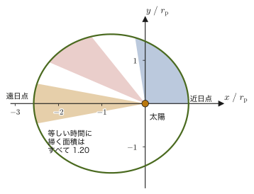
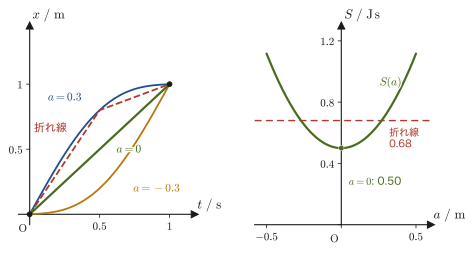
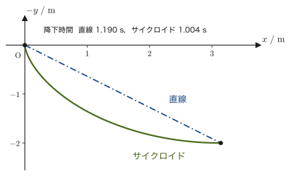

第44章ラグランジュ形式の応用と変分原理
前章では，ニュートンの運動方程式 $\bm F=m\bm a$ を出発点として，一般化座標 $q_i$ を使ったラグランジュの運動方程式
$$ \diff{}{t}\left(\pdiff{L}{\dot q_i}\right)-\pdiff{L}{q_i}=0,\qquad L=T-U $$を導いた．この章の前半では，まず「この方程式のどこが便利か」を確認し，落下運動・単振動・単振り子・惑星の運動の4つに実際に適用して，「$L$ を作って機械的に微分するだけで運動方程式が求まる」という手順を身につける．惑星の運動では，第6章 6.2節で導いた極座標の加速度の公式 $a_r=\ddot r-r\dot\theta^2,\ a_\theta=2\dot r\dot\theta+r\ddot\theta$ を一切使わずに，同じ結果が得られることを確認する（第8章のニュートン力学による結果と照合する）．
後半では，「ラグランジュの運動方程式は，そもそもどこから来たのか」という問いに，前章とは別の角度から答える．自然は，出発点と終着点を固定したとき，作用（action）と呼ばれる量を停留させる経路を「選ぶ」——これがハミルトンの原理（最小作用の原理）で，ここから変分法（calculus of variations）を使って，前章と全く同じ式が導かれる．そのあと，2点間の最短経路・光の進み方（第14章のフェルマーの原理）・最速降下線の3つの問題で変分法に慣れ，最後に，大学数学 第6章で学んだ条件付き極値の方法（ラグランジュの未定乗数法）を力学に拡張して，束縛力（張力など）そのものを求める．
- ラグランジュの運動方程式の利点（座標系によらない・束縛力を考えなくてよい）と限界（非保存力を直接には扱えない）を理解し，「$L$ を立てて微分するだけ」という手順を4つの具体例（落下運動・単振動・単振り子・惑星の運動）で実践する
- 惑星の運動をラグランジュ形式で解き，第8章のニュートン力学による結果（角運動量保存・ケプラーの法則）と完全に一致することを確認する
- 汎関数・作用の概念とハミルトンの原理（最小作用の原理）$\delta S=0$ を理解し，変分法によってオイラー–ラグランジュ方程式を導く（境界項の処理を含め，一行も省略せずに）
- 2点間の最短経路・光線の道筋（スネルの法則）・最速降下線（ブラキストクロン問題）という3つの変分問題を解き，フェルマーの原理との構造的な類似性を理解する
- ラグランジュの未定乗数法を力学に拡張し，束縛条件つきの運動方程式から拘束力（張力など）を陽に求める方法を身につける
44.1 ラグランジュの運動方程式の意義 — 何がうれしいのか
第43章で，ニュートンの運動方程式 $\bm F=m\bm a$ から出発して，一般化座標 $q_i$（$i=1,\dots,n$）を使った次の方程式を導いた（再掲）．
$$ \diff{}{t}\left(\pdiff{L}{\dot q_i}\right)-\pdiff{L}{q_i}=0 \qquad (i=1,\dots,n),\qquad L\equiv T-U $$ここで $\partial$（ラウンド・ディー）は偏微分の記号で，$\partial L/\partial\dot q_i$ は「$\dot q_i$ 以外の変数を定数とみなして，$\dot q_i$ だけで $L$ を微分したもの」を表す（大学数学 第6章 6.2節）．また $\equiv$ は「左辺を右辺で定義する」という意味の等号である．$L$ をラグランジアン（Lagrangian）と呼ぶ（人名はラグランジュ，Joseph-Louis Lagrange に由来）．$T$ は運動エネルギー，$U$ はポテンシャルエネルギーで，どちらもスカラー量だから，$L=T-U$ もスカラー量である．次元は運動エネルギー・位置エネルギーと同じくエネルギーの次元，すなわち $\mathrm{N\cdot m=J}$ である．これがこの章の出発点であり，以下では導出そのものには立ち戻らず（導出は前章で済んでいる），「なぜこの1本の式がそれほど強力なのか」を確認したうえで，実際に使う練習をする．
ラグランジュの運動方程式は，ニュートンの運動方程式 $m\ddot x=F$ を一般化（generalize）したものである．「一般化」とは次の意味である．$m\ddot x=F$ は，高校物理で学んだとおり，直交座標 $x$ に対して書いた式だった．ところが，振り子の振れ角 $\theta$ や，惑星の太陽からの距離 $r$ のように，直交座標ではない量で運動を記述したいことがよくある．ラグランジュの運動方程式は，座標として何を選んでも（長さでも角度でも）同じ型で成り立つように，$m\ddot x=F$ を拡張した式なのである．元の式を含んでいること，すなわち座標として直交座標を選べばニュートンの運動方程式にもどることは，次の例題ですぐに確かめられる．
例題44.1 ラグランジュの運動方程式はニュートンの運動方程式を含む
質量 $m$ の質点が $x$ 軸上を，ポテンシャルエネルギー $U(x)$ で表される保存力 $F=-\dd U/\dd x$（第4章 4.4節）だけを受けて運動する．$L=\frac12m\dot x^2-U(x)$ にラグランジュの運動方程式を適用して，ニュートンの運動方程式 $m\ddot x=F$ が得られることを確かめよ．さらに，3次元の直交座標 $(x,y,z)$ に拡張した場合の結果を書け．
解答 $L=\frac12m\dot x^2-U(x)$ を偏微分する．$\dot x$ を含む項は $\frac12m\dot x^2$ だけなので $\partial L/\partial\dot x=m\dot x$．$x$ を含む項は $-U(x)$ だけなので $\partial L/\partial x=-\dd U/\dd x$（$q$ と $\dot q$ は独立な変数として扱う．後の例44.1を参照）．ラグランジュの運動方程式に代入すると，
$$ \diff{}{t}\left(\pdiff{L}{\dot x}\right)-\pdiff{L}{x}=\diff{}{t}(m\dot x)-\left(-\diff{U}{x}\right)=m\ddot x+\diff{U}{x}=0 $$（$m$ が定数なので $\diff{}{t}(m\dot x)=m\ddot x$）．よって $m\ddot x=-\dd U/\dd x=F$ となり，たしかにニュートンの運動方程式である．たとえばばねなら $U=\frac12kx^2$ なので $m\ddot x=-kx$，重力なら $U=mgx$ なので $m\ddot x=-mg$ である．
3次元では $L=\frac12m(\dot x^2+\dot y^2+\dot z^2)-U(x,y,z)$ とすれば，$q=x,y,z$ のそれぞれについて同じ計算ができて，$m\ddot x=-\partial U/\partial x$，$m\ddot y=-\partial U/\partial y$，$m\ddot z=-\partial U/\partial z$ となる．これをまとめて書けば $m\bm a=-\nabla U=\bm F$ で，ベクトルの形のニュートンの運動方程式（第2章）そのものである．右辺の単位は $\mathrm{J/m}=\mathrm N$，左辺も $\mathrm{kg\,m/s^2}=\mathrm N$ で一致している．
44.1.1 ラグランジュの運動方程式の利点
$q_i$ は一般化座標（generalized coordinate）と呼ばれ，直交座標 $x,y,z$ はもちろん，極座標 $r,\theta$，円柱座標 $r,\theta,z$，球座標 $r,\theta,\varphi$ など，質点（または質点系）の位置を過不足なく指定できるものなら何でもよい（第43章）．この自由度の高さから，ラグランジュの運動方程式には次のような利点がある．
- 利点(I) ラグランジアン $L$ はスカラー量（大きさと向きを持たない，ただの実数）なので，ベクトル量である力 $\bm F$ を成分ごとに分解して足し合わせるより，比較的簡単に求まる．
- 利点(II) $L$ さえ求めてしまえば，あとは決められた手順（$\dot q_i$ で偏微分して時間微分し，$q_i$ での偏微分を引く）で機械的に計算するだけで運動方程式が求まる．力の図（自由体図）を毎回描いて力を数え上げる必要がない．
- 利点(III) ラグランジュの運動方程式は，どのような座標系を使っても，質点の位置さえ特定できれば同じ形 $\diff{}{t}(\partial L/\partial\dot q_i)-\partial L/\partial q_i=0$ のままである．座標系を変えるたびに運動方程式の「形」自体を書き直す必要がない——これが最大の利点である．
- 利点(IV) 質点にはたらく厄介な束縛力（斜面上の垂直抗力，単振り子の糸の張力など）を，最初から考慮しなくてよい．束縛条件を満たすように一般化座標を選べば（たとえば単振り子なら，棒の長さが一定という条件を最初から組み込んで $\theta$ だけを座標に選べば），束縛力は運動方程式に一切現れない．
イメージ：利点(III)はなぜそんなに重要なのか
ニュートンの運動方程式 $\bm F=m\bm a$ は，ベクトルの方程式としては座標系によらず正しいが，それを成分で書き下すと，座標系ごとに形が変わってしまう．たとえば極座標での加速度は $a_r=\ddot r-r\dot\theta^2,\ a_\theta=2\dot r\dot\theta+r\ddot\theta$（第6章 6.2節）という，直交座標の $a_x=\ddot x,\ a_y=\ddot y$ とはまるで違う形をしている．座標系を変えるたびに，加速度の公式を覚え直すか導き直す必要がある．ところがラグランジュの運動方程式は，$q_i$ が何であっても常に同じ「$\diff{}{t}(\partial L/\partial\dot q_i)-\partial L/\partial q_i=0$」という型のままである．座標系に応じて変わるのは，この型に代入する $L$ の中身（$T,U$ を $q_i,\dot q_i$ でどう書くか）だけであり，方程式の作り方そのものは変わらない．44.3節の惑星の運動で，この威力を実際に確認する．
注意：欠点(I) — 非保存力はそのままでは扱えない
ラグランジュの運動方程式 $\diff{}{t}(\partial L/\partial\dot q_i)-\partial L/\partial q_i=0$ は，$L=T-U$ という形で書けること，つまりすべての力が保存力（ポテンシャルエネルギー $U$ から $\bm F=-\nabla U$ の形で導けること，第4章 4.4節）を前提にしている．2つの物体の接触面にはたらく摩擦力のような非保存力は，そもそもポテンシャルエネルギーから導くことができないので，この形のラグランジュの運動方程式では表せない（第43章で学んだ非保存力を含む拡張形 $\diff{}{t}(\partial L/\partial\dot q_i)-\partial L/\partial q_i=Q_i'$ を使えば扱えるが，$Q_i'$（非保存力の一般化力，第43章 43.5節）を別途求める必要がある）．44.2節の例題44.2で，この拡張形を実際に使ってみる．
44.1.2 次元についての注意
第43章 43.3節の注意（一般化力・一般化運動量の単位は常に $\mathrm N$・$\mathrm{kg\,m/s}$ ではない）の続きとして，ここではラグランジアンの偏微分の次元を整理する．
ラグランジアン $L$ 自身の次元は常にエネルギー（$\mathrm J$）だが，$\partial L/\partial\dot q_i$ や $\partial L/\partial q_i$ の次元は，$q_i$ が何を表すかによって変わる．たとえば $q_i$ が長さ（$\mathrm m$）なら，$\partial L/\partial\dot q_i$ は運動量の次元（$\mathrm{kg\,m/s}$），$\partial L/\partial q_i$ は力の次元（$\mathrm N$）である．しかし $q_i$ が角度（無次元）なら，$\partial L/\partial\dot q_i$ は角運動量の次元（$\mathrm{kg\,m^2/s}$），$\partial L/\partial q_i$ は力のモーメント（トルク）の次元（$\mathrm{N\cdot m}$）になる——「$\partial L/\partial\dot q_i$，$\partial L/\partial q_i$ の次元は常に $\mathrm N$ というわけではない」ことに注意しよう．一般に $p_i\equiv\partial L/\partial\dot q_i$ を一般化運動量と呼ぶ（第43章 43.2節）．一方，一般化力 $Q_i$（第43章 43.3節）は，保存力の場合 $Q_i=-\partial U/\partial q_i$ であり，$\partial L/\partial q_i=\partial T/\partial q_i-\partial U/\partial q_i=Q_i+\partial T/\partial q_i$ という関係にある（$\partial T/\partial q_i$ は，極座標では遠心力に相当する項で，44.3節の惑星の運動では $mr\dot\theta^2$ として現れる）．$Q_i$ も $\partial L/\partial q_i$ も，$q_i$ が長さなら力の次元（$\mathrm N$），角度ならトルクの次元（$\mathrm{N\cdot m}$）である．次元をまとめると表44.1のとおりである．
| $q_i$ の種類 | $q_i$ の次元 | $p_i=\partial L/\partial\dot q_i$ の次元 | $\partial L/\partial q_i$（および一般化力 $Q_i$）の次元 |
|---|---|---|---|
| 長さ（例：$x,r$） | $\mathrm m$ | 運動量 $\mathrm{kg\,m/s}$ | 力 $\mathrm N$ |
| 角度（例：$\theta,\varphi$） | 無次元 | 角運動量 $\mathrm{kg\,m^2/s}$ | 力のモーメント $\mathrm{N\cdot m}$ |
イメージ：$q_i$ と $\dot q_i$ は独立な変数
ラグランジアン $L(q_i,\dot q_i,t)$ を偏微分するときにいちばん混乱しやすいのは，「$q_i$ と $\dot q_i$ は別々の独立変数として扱う」という規則である．物理的には $\dot q_i$ は $q_i$ を時間微分したものだが，偏微分 $\partial L/\partial q_i$ を計算するときは $\dot q_i$ を（$q_i$ とは無関係な）定数のように扱って $q_i$ だけで微分し，逆に $\partial L/\partial\dot q_i$ を計算するときは $q_i$ を定数のように扱って $\dot q_i$ だけで微分する．最終的に運動方程式の中で $q_i(t)$ と $\dot q_i(t)=\dd q_i/\dd t$ の関係が使われるのは，$\diff{}{t}(\partial L/\partial\dot q_i)$ の部分（時間微分をとる段階）だけである．
例44.1 $q$ と $\dot q$ を独立変数として偏微分する
$L=\dfrac12 m\dot q^2-mgq$ のとき，$\partial L/\partial\dot q$ と $\partial L/\partial q$ をそれぞれ求めよ．
解答 $\partial L/\partial\dot q$ を計算するときは $q$ を定数として扱い，$\dot q$ だけで微分する．$L$ の中で $\dot q$ を含む項は $\frac12m\dot q^2$ だけなので，
$$ \pdiff{L}{\dot q}=m\dot q $$である．一方，$\partial L/\partial q$ を計算するときは $\dot q$ を定数として扱い，$q$ だけで微分する．$L$ の中で $q$ を含む項は $-mgq$ だけなので，
$$ \pdiff{L}{q}=-mg $$である．$\partial L/\partial\dot q=m\dot q$（運動量の次元）と $\partial L/\partial q=-mg$（力の次元）が全く異なる式になっていることに注意しよう——$\dot q$ を含む項と $q$ を含む項が違う項なので，互いの偏微分は独立に計算できる．
44.2 応用例：落下運動・単振動・単振り子
ここからは，ラグランジュの運動方程式を実際に使う練習をする．手順はいつも同じ3ステップである．
- 質点の位置を過不足なく指定できる一般化座標 $q$ を選ぶ．
- 運動エネルギー $T$ とポテンシャルエネルギー $U$ を，選んだ座標とその時間微分（$\dot q$）で書き，$L=T-U$ を作る．
- $\diff{}{t}(\partial L/\partial\dot q)-\partial L/\partial q=0$ に機械的に代入し，整理する．
この3ステップを，高校物理でおなじみの3つの運動——落下運動・単振動・単振り子——に順番に適用してみよう．
44.2.1 落下運動
鉛直上向きに $x$ 軸をとり，質量 $m$ の質点が自由落下する場合を考える（図44.1）．地表近くでの重力によるポテンシャルエネルギーは，高校物理の公式（第4章 4.4節）と同じく
\begin{equation} U=mgx \label{eq:44-fall-U} \end{equation}である（$x$ を高さと思えば $U=mgh$ そのもの．なお，地表からの高さが地球の半径 $R_\oplus$ と比べて無視できないほど大きい「超マクロ」な場合には，この近似は使えず，第8章 8.4節で学んだ厳密な形 $U=-GMm/r$（$r$ は地球の中心からの距離）を使う必要がある．実際，$r=R_\oplus+x$ として $x\ll R_\oplus$ で展開すると，$U=-GMm/(R_\oplus+x)\approx-GMm/R_\oplus+GMm x/R_\oplus^2=(\text{定数})+mgx$（$g\equiv GM/R_\oplus^2$ を使った）となり，定数を除けば式 \eqref{eq:44-fall-U} に一致する——高校物理の $U=mgh$ は，万有引力の位置エネルギーを地表近くで近似したものだったことが，ここでも確認できる）．運動エネルギーは $T=\frac12m\dot x^2$ なので，
\begin{equation} L=T-U=\frac12m\dot x^2-mgx \label{eq:44-fall-L} \end{equation}である．ラグランジュの運動方程式に代入すると，
$$ \diff{}{t}\left(\pdiff{L}{\dot x}\right)-\pdiff{L}{x}=\diff{}{t}(m\dot x)-(-mg)=\diff{}{t}(m\dot x)+mg=0 $$（$\partial L/\partial\dot x=m\dot x$ は $\frac12m\dot x^2$ の項だけから，$\partial L/\partial x=-mg$ は $-mgx$ の項だけから来ることに注意）．したがって，
\begin{equation} \diff{}{t}(m\dot x)=-mg \label{eq:44-fall-eom} \end{equation}となる．$m$ が定数なら $m\ddot x=-mg$，すなわち $\ddot x=-g$ であり，これは高校物理の自由落下の運動方程式（第2章）そのものである．
例44.2 落下運動（ラグランジュ形式）
鉛直上向きに $x$ 軸をとった自由落下運動を，ラグランジュの運動方程式を使って解け．
解答 本文の式 \eqref{eq:44-fall-U}–\eqref{eq:44-fall-eom} のとおりで，結果は $\diff{}{t}(m\dot x)=-mg$，すなわち $\ddot x=-g$（等加速度運動）である．
例題44.2 空気抵抗のある落下運動 — 非保存力を含む場合
質量 $m$ の質点が，鉛直上向きに $x$ 軸をとった座標で自由落下する．速度に比例する空気抵抗（比例定数 $k>0$，向きは常に速度と逆）がはたらくとき，終端速度（十分時間が経ったあとの一定の速度）を求めよ．
解答 空気抵抗は非保存力なので，ポテンシャルエネルギー $U$ には含められない．第43章で学んだ非保存力を含む形のラグランジュの運動方程式
$$ \diff{}{t}\left(\pdiff{L}{\dot x}\right)-\pdiff{L}{x}=Q' $$を使う．$L$ は重力だけを含めた式 \eqref{eq:44-fall-L}（$L=\frac12m\dot x^2-mgx$）のままとし，空気抵抗を一般化力 $Q'$（第43章の定義 $Q'=\sum_j F_j'\,\partial x_j/\partial q$ で，直交座標 $x$ をそのまま使う場合は $Q'=F'_x$）として右辺に入れる．抵抗力は速度 $\dot x$ に比例し向きが逆なので $Q'=-k\dot x$（第7章 7.3節で同じ形の抵抗力を扱った．$k\dot x$ が力になるので，$k$ の単位は $\mathrm{N/(m/s)}=\mathrm{kg/s}$）．したがって，
$$ \diff{}{t}(m\dot x)+mg=-k\dot x \qquad\text{すなわち}\qquad m\ddot x+k\dot x+mg=0 $$となる．終端速度 $v_{\text{終端}}$ では加速度が0（$\ddot x=0$）になるので，これを代入すると，
$$ k\dot x+mg=0 \qquad\therefore\ v_{\text{終端}}=\dot x=-\frac{mg}{k} $$である（次元の確認：$mg/k$ の単位は $\mathrm{kg\,(m/s^2)/(kg/s)}=\mathrm{m/s}$ で，速度の単位に一致する）．負符号は，$x$ を上向き正にとったので終端速度が下向き（大きさ $mg/k$）であることを表す——空気抵抗が大きい（$k$ が大きい）ほど，または軽い（$m$ が小さい）ほど，終端速度は小さくなる（雨粒やパラシュートが一定の速さで落ち続けるのはこのためである）．
44.2.2 単振動
壁に固定したばね（ばね定数 $k$）の先につながれた質量 $m$ の質点を考える．自然長のときの質点の位置を $x_0$ とし，右向きに $x$ 軸をとる（図44.2）．ばねによるポテンシャルエネルギーは，フックの法則から（第4章 4.4節）
$$ U=\frac12k(x-x_0)^2 $$であり，運動エネルギーは $T=\frac12m\dot x^2$ である．したがって，
$$ L=\frac12m\dot x^2-\frac12k(x-x_0)^2 $$となる．ラグランジュの運動方程式に代入すると，
$$ \diff{}{t}\left(\pdiff{L}{\dot x}\right)-\pdiff{L}{x}=\diff{}{t}(m\dot x)-\big(-k(x-x_0)\big)=\diff{}{t}(m\dot x)+k(x-x_0)=0 $$より，
\begin{equation} \diff{}{t}(m\dot x)=-k(x-x_0) \label{eq:44-sho-eom} \end{equation}である．$x_0$ を原点に選び直せば（$x'\equiv x-x_0$），$m\ddot x'=-kx'$ となって，第7章 7.1節で学んだばね振り子の運動方程式そのものである．
例44.3 単振動（ラグランジュ形式）
図44.2のばね振り子を，ラグランジュの運動方程式を使って解け．
解答 本文のとおりで，結果は $\diff{}{t}(m\dot x)=-k(x-x_0)$（式 \eqref{eq:44-sho-eom}），すなわち $x_0$ を原点にとれば単振動の運動方程式 $m\ddot x=-kx$（第7章 定理7.1）である．
例題44.3 ばね振り子の周期と最大の速さ
質量 $m=0.20\ \mathrm{kg}$ の質点を，ばね定数 $k=80\ \mathrm{N/m}$ のばねにつなぐ（図44.2）．時刻 $t=0$ に，自然長の位置から右へ $A=0.050\ \mathrm m$ だけ引っ張って静かに放す．(1) 角振動数 $\omega$ と周期を求めよ．(2) 位置 $x(t)$ を求めよ．(3) 質点の最大の速さを求めよ．
解答 (1) 自然長の位置からの変位 $X\equiv x-x_0$ を使うと，式 \eqref{eq:44-sho-eom} は $m\ddot X=-kX$，すなわち $\ddot X=-\omega^2X$（$\omega\equiv\sqrt{k/m}$）である（$x_0$ は定数なので $\ddot X=\ddot x$）．よって
$$ \omega=\sqrt{\frac{k}{m}}=\sqrt{\frac{80\ \mathrm{N/m}}{0.20\ \mathrm{kg}}}=\sqrt{400\ \mathrm{s^{-2}}}=20\ \mathrm{rad/s} $$である（$\mathrm{N/(m\,kg)}=\mathrm{s^{-2}}$ なので，平方根をとると $\mathrm{s^{-1}}$ になる）．周期は $T_0=2\pi/\omega=2\pi/(20\ \mathrm{s^{-1}})=0.314\ \mathrm s$（約 $0.31\ \mathrm s$）である（高校物理の $T_0=2\pi\sqrt{m/k}$ と同じ）．
(2) 一般解は $X=C_1\cos\omega t+C_2\sin\omega t$（第7章 定理7.1）．初期条件 $X(0)=A$ より $C_1=A$．速度 $\dot X=-C_1\omega\sin\omega t+C_2\omega\cos\omega t$ に初期条件 $\dot X(0)=0$ を入れると $C_2\omega=0$ なので $C_2=0$．したがって
$$ x(t)=x_0+A\cos\omega t=x_0+0.050\cos(20t)\ \mathrm m\qquad(t\text{ は秒}) $$である．
(3) 速度は $\dot x=-A\omega\sin\omega t$ で，$\abs{\sin\omega t}\le1$ だから最大の速さは $A\omega=0.050\ \mathrm m\times20\ \mathrm{s^{-1}}=1.0\ \mathrm{m/s}$（自然長の位置を通るとき）である．エネルギーで確かめると，はじめの弾性エネルギー $\frac12kA^2=\frac12\times80\times0.050^2=0.10\ \mathrm J$，最大の速さのときの運動エネルギー $\frac12m(A\omega)^2=\frac12\times0.20\times1.0^2=0.10\ \mathrm J$ で，たしかに一致する．
44.2.3 単振り子
天井の固定点 $\mathrm O$ から長さ $\ell$ の軽い棒（または糸）でつるされた質量 $m$ の質点を考える（図44.3）．$r,\theta$ 極座標系（$\mathrm O$ を原点，鉛直下向きを $\theta=0$）で考えると，棒の長さが一定という束縛条件 $r=\ell$ より，座標は $\theta$ だけが変化することが分かる——これが，束縛条件を最初から満たすように一般化座標を選ぶという，44.1節の利点(IV)の具体例である．鉛直方向の位置エネルギーは，最下点を基準にとると
$$ U=mg\ell(1-\cos\theta) $$である（図44.3の高さの差 $\ell(1-\cos\theta)$ に重力加速度と質量をかけたもの）．運動エネルギーは，極座標での速度 $\bm v=\dot r\bm e_r+r\dot\theta\bm e_\theta$（第6章 6.1節）で $r=\ell$（定数，$\dot r=0$）を使うと，
$$ T=\frac12m\left(\dot r^2+(r\dot\theta)^2\right)=\frac12m\ell^2\dot\theta^2 $$となる．したがって，
$$ L=\frac12m\ell^2\dot\theta^2-mg\ell(1-\cos\theta) $$である．ラグランジュの運動方程式（座標は $\theta$）に代入すると，
$$ \diff{}{t}\left(\pdiff{L}{\dot\theta}\right)-\pdiff{L}{\theta}=\diff{}{t}(m\ell^2\dot\theta)-\big(-mg\ell\sin\theta\big)=\diff{}{t}(m\ell^2\dot\theta)+mg\ell\sin\theta=0 $$（$\partial L/\partial\theta$ は $-mg\ell(1-\cos\theta)$ の項を $\theta$ で微分した $-mg\ell\sin\theta$ から来る）．よって，
\begin{equation} \diff{}{t}(m\ell^2\dot\theta)=-mg\ell\sin\theta \label{eq:44-pend-eom} \end{equation}となる．$m,\ell$ が定数なので $m\ell^2\ddot\theta=-mg\ell\sin\theta$，両辺を $m\ell^2$ で割ると，
\begin{equation} \ddot\theta=-\frac{g}{\ell}\sin\theta \label{eq:44-pend-eom-final} \end{equation}である．これが単振り子の（厳密な）運動方程式であり，小角近似 $\sin\theta\approx\theta$（$\theta$ をラジアンで測ったときに成り立つ近似，大学数学 第4章のテイラー展開の1次近似）を使うと $\ddot\theta\approx-(g/\ell)\theta$ となり，第7章 7.2節で学んだ単振り子の周期の公式 $T_0=2\pi\sqrt{\ell/g}$ がここでも得られる．
注意：次元を確認する習慣をつけよう
位置エネルギーの式を立てたら，必ず次元を確認する習慣をつけよう．たとえば $U=mg\ell(1-\cos\theta)$ では，$\ell(1-\cos\theta)$ は長さ（$\mathrm m$），$mg$ は力（$\mathrm N$）で，積は $\mathrm{N\,m}=\mathrm J$ となり，エネルギーの次元に合う．もし $mg$ を書き忘れて $U=\ell(1-\cos\theta)$ としてしまうと，$U$ の次元が $\mathrm m$ になり，$L=T-U$ の2つの項（$\mathrm J$ と $\mathrm m$）の次元が合わなくなるので，その場で誤りに気づける．次元の不一致は，因子の書き忘れを見つける最も簡単な方法である．
例44.4 単振り子（ラグランジュ形式）
図44.3の単振り子を，束縛条件 $r=\ell$ を最初から満たす極座標 $\theta$ を使ったラグランジュの運動方程式で解け．
解答 本文のとおりで，結果は $\ddot\theta=-(g/\ell)\sin\theta$（式 \eqref{eq:44-pend-eom-final}）である．注目してほしいのは，単振り子の糸の張力が運動方程式に一切現れていないことである——束縛条件 $r=\ell$ を満たす座標 $\theta$ だけを使ったので，44.1節の利点(IV)のとおり，束縛力（張力）を考える必要が最初からなかった．張力そのものの大きさを知りたい場合は，44.7節のラグランジュの未定乗数法を使う．
例題44.4 単振り子のエネルギー保存則と最下点の速さ
長さ $\ell=1.0\ \mathrm m$，質量 $m=0.50\ \mathrm{kg}$ の単振り子を，鉛直下向きから $\theta_0=60^\circ$ 傾けた位置で静かに放す．(1) 運動方程式 \eqref{eq:44-pend-eom} から，$\frac12m\ell^2\dot\theta^2+mg\ell(1-\cos\theta)$ が時間によらず一定であることを示せ．(2) 最下点（$\theta=0$）での質点の速さを求めよ．
解答 (1) 式 \eqref{eq:44-pend-eom} は $m\ell^2\ddot\theta=-mg\ell\sin\theta$，すなわち $m\ell^2\ddot\theta+mg\ell\sin\theta=0$ である．両辺に $\dot\theta$ をかけると，
$$ m\ell^2\dot\theta\,\ddot\theta+mg\ell\sin\theta\;\dot\theta=0 $$となる．左辺の各項は，合成関数の微分（大学数学 第6章 6.4節）により，$\diff{}{t}\left(\frac12m\ell^2\dot\theta^2\right)=m\ell^2\dot\theta\ddot\theta$，$\diff{}{t}\big(-mg\ell\cos\theta\big)=mg\ell\sin\theta\,\dot\theta$ と書ける．定数 $mg\ell$ を足しても時間微分は変わらないので，
$$ \diff{}{t}\left[\frac12m\ell^2\dot\theta^2+mg\ell(1-\cos\theta)\right]=0 $$である．すなわち $E=T+U=\frac12m\ell^2\dot\theta^2+mg\ell(1-\cos\theta)$ は一定である（力学的エネルギー保存則，第4章 4.5節）．
(2) 放した瞬間は $\dot\theta=0$，$\theta=\theta_0$ なので，$E=mg\ell(1-\cos\theta_0)$ である．最下点 $\theta=0$ では $U=0$ なので，
$$ \frac12m\ell^2\dot\theta^2=mg\ell(1-\cos\theta_0) \qquad\therefore\ v=\ell\abs{\dot\theta}=\sqrt{2g\ell(1-\cos\theta_0)} $$となる．数値を入れると，$\cos60^\circ=0.5$ より
$$ v=\sqrt{2\times9.8\ \mathrm{m/s^2}\times1.0\ \mathrm m\times(1-0.5)}=\sqrt{9.8}\ \mathrm{m/s}=3.1\ \mathrm{m/s} $$である．質量 $m$ は約分されて消えるので，質量によらない（高校物理の $\frac12mv^2=mgh$，$h=\ell(1-\cos\theta_0)=0.50\ \mathrm m$ と同じ結果）．運動エネルギーは $\frac12\times0.50\times9.8=2.45\ \mathrm J$ である．
44.3 応用例：惑星の運動 — 第8章の結果との照合
最後の応用例として，太陽（質量 $M$）のまわりを運動する惑星（質量 $m$）の運動を考える．太陽を原点とする $r,\theta$ 極座標系で考える（図44.4）．太陽の重力によるポテンシャルエネルギーは，万有引力の位置エネルギー（第4章 4.4節）
$$ U=-G\frac{Mm}{r} $$であり，運動エネルギーは，落下運動や単振り子と同じく極座標での速度から
$$ T=\frac12m\left(\dot r^2+(r\dot\theta)^2\right) $$である（今度は単振り子と違って $r$ も時間変化する——惑星は太陽に近づいたり遠ざかったりするから，束縛条件 $r=$ 一定は成り立たない）．したがって，
$$ L=\frac12m\left(\dot r^2+(r\dot\theta)^2\right)-\left(-G\frac{Mm}{r}\right)=\frac12m\left(\dot r^2+(r\dot\theta)^2\right)+G\frac{Mm}{r} $$である．この問題には座標が2つ（$r$ と $\theta$）あるので，ラグランジュの運動方程式もそれぞれの座標について1本ずつ，合計2本の連立方程式になる．
導出：惑星の運動のラグランジュ方程式（$r$ 方向と $\theta$ 方向）
まず，抽象的な形のまま2本の方程式を書き下す：
\begin{equation} \begin{cases} \diff{}{t}\left(\pdiff{L}{\dot r}\right)-\pdiff{L}{r}=0\\[2mm] \diff{}{t}\left(\pdiff{L}{\dot\theta}\right)-\pdiff{L}{\theta}=0 \end{cases} \label{eq:44-planet-abstract} \end{equation}ここで，$L$ を $r,\dot r,\theta,\dot\theta$ でそれぞれ偏微分する．$\dot r$ を含む項は $\frac12m\dot r^2$ だけなので $\partial L/\partial\dot r=m\dot r$．$r$ を含む項は $\frac12mr^2\dot\theta^2$ と $GMm/r$ の2つなので，$\partial L/\partial r=mr\dot\theta^2-GMm/r^2$（$GMm/r=GMmr^{-1}$ を $r$ で微分すると $-GMmr^{-2}$ になることに注意）．一方，$\dot\theta$ を含む項は $\frac12mr^2\dot\theta^2$ だけなので $\partial L/\partial\dot\theta=mr^2\dot\theta$．$\theta$ を含む項は $L$ の中に存在しない（$L$ は $\theta$ そのものにはよらず，$\dot\theta$ を通してしか現れない）ので $\partial L/\partial\theta=0$．これらを式 \eqref{eq:44-planet-abstract} に代入すると，
\begin{equation} \begin{cases} \diff{}{t}(m\dot r)-\left(mr\dot\theta^2-G\dfrac{Mm}{r^2}\right)=0\\[2mm] \diff{}{t}(mr^2\dot\theta)-0=0 \end{cases} \label{eq:44-planet-concrete} \end{equation}となる（これが，抽象的な形 \eqref{eq:44-planet-abstract} に $L$ を具体的に代入した形である）．これをさらに整理しよう．1番目の式は，$m$ が定数なので $\diff{}{t}(m\dot r)=m\ddot r$ であり，かっこの前のマイナスを分配すると
$$ m\ddot r-mr\dot\theta^2+G\frac{Mm}{r^2}=0 $$となる．2番目の式は，$r^2$ と $\dot\theta$ の両方が時間とともに変わるので，積の微分（$\diff{}{t}(r^2)=2r\dot r$ を使う）により $\diff{}{t}(mr^2\dot\theta)=m(2r\dot r\dot\theta+r^2\ddot\theta)$ であり，
$$ m\big(2r\dot r\dot\theta+r^2\ddot\theta\big)=0 $$となる．この左辺は全体が $r$ の倍数なので，両辺を $r$（$r\ne0$）で割ると $m(2\dot r\dot\theta+r\ddot\theta)=0$ である．1番目の式のほうは，$-mr\dot\theta^2$ と万有引力の項を移項すれば $m(\ddot r-r\dot\theta^2)=-GMm/r^2$ になる．まとめると，
\begin{equation} \begin{cases} m\big(\ddot r-r\dot\theta^2\big)=-G\dfrac{Mm}{r^2}\\[2mm] m\big(2\dot r\dot\theta+r\ddot\theta\big)=0 \end{cases} \label{eq:44-planet-final} \end{equation}となる．左辺の $\ddot r-r\dot\theta^2$ と $2\dot r\dot\theta+r\ddot\theta$ は，実は極座標での加速度の動径成分 $a_r$・角度成分 $a_\theta$（第6章 6.2節）に他ならない．
（導出終わり）
イメージ：極座標の加速度を暗記しなくても導出できる
第6章 6.2節では，極座標での加速度の公式 $a_r=\ddot r-r\dot\theta^2,\ a_\theta=2\dot r\dot\theta+r\ddot\theta$ を，速度 $\bm v=\dot r\bm e_r+r\dot\theta\bm e_\theta$ をさらに時間微分し，単位ベクトル $\bm e_r,\bm e_\theta$ 自身も時間変化することに注意しながら導いた．しかし，式 \eqref{eq:44-planet-final} の導出では，この加速度の公式を一度も使っていない——$v_r=\dot r,\ v_\theta=r\dot\theta$（速度の極座標成分）さえ知っていれば，あとは $T=\frac12m(\dot r^2+(r\dot\theta)^2)$ を機械的に偏微分するだけで，加速度の公式を暗記していなくても正しい運動方程式が導けてしまう．これが，44.1節の利点(I)（$L$ はスカラー量で求めやすい）と利点(II)（機械的な計算で済む）の威力である．
44.3.1 第8章の結果との照合
式 \eqref{eq:44-planet-final} の1番目の式は，$m(\ddot r-r\dot\theta^2)=-GMm/r^2$ であり，これは第8章でニュートンの運動方程式（動径方向）から直接導いた結果と完全に一致する．2番目の式 $m(2\dot r\dot\theta+r\ddot\theta)=0$ は，$\diff{}{t}(mr^2\dot\theta)=0$（式 \eqref{eq:44-planet-concrete}の2番目の式そのもの）と同じ意味であり，
$$ p_\theta\equiv mr^2\dot\theta=\text{一定} $$という角運動量保存則（第8章 法則8.1）を表している．ここで $p_\theta=\partial L/\partial\dot\theta$ は $\theta$ に対応する一般化運動量である．本章では $L$ はラグランジアンを表すので，角運動量を $L_z$ とは書かず，第45章以降と同じく $p_\theta$ と書く（第8章で角運動量として導入した $mr^2\dot\theta$ とまったく同じ量である）．
これがケプラーの第2法則（第8章 法則8.2）とどう結びつくのかも確かめておこう．微小時間 $\dd t$ のあいだに動径 $r$ が $\dd\theta=\dot\theta\,\dd t$ だけ回転すると，動径が掃く部分は，底辺が $r$，高さが $r\,\dd\theta$ の細い三角形とみなせるので，その面積は
$$ \dd A=\frac12\cdot r\cdot(r\,\dd\theta)=\frac12r^2\dot\theta\,\dd t $$である．したがって面積速度（単位時間に動径が掃く面積）は
\begin{equation} \diff{A}{t}=\frac12r^2\dot\theta=\frac{p_\theta}{2m}=\text{一定} \label{eq:44-areal-velocity} \end{equation}となる（$p_\theta=mr^2\dot\theta$ が一定で $m$ も定数だから）．つまり「$\theta$ 方向のラグランジュの運動方程式」$=$「角運動量保存」$=$「ケプラーの第2法則」である．$L$ の中に $\theta$ そのものが現れない（座標 $\theta$ を変えても $L$ が変わらない）という事実が，この保存則の源になっている——この考え方は，第46章で，対称性と保存則を結びつけるネーターの定理として一般化される．
ラグランジュ形式でも，ニュートン力学（第8章）でも，全く同じ運動方程式・同じ保存則に到達することが確認できた——出発点（力の釣り合いから考えるか，エネルギーのスカラー量 $L$ から機械的に微分するか）が違っても，同じ物理法則にたどり着くのは当然のことではあるが，実際に手を動かして確認する価値がある．
最後に，連立方程式 \eqref{eq:44-planet-final} を計算機で数値的に解いてみよう．長さの単位を近日点距離 $r_{\mathrm p}$，時間の単位を $\sqrt{r_{\mathrm p}^3/(GM)}$ にとり（$GM=1$，$r_{\mathrm p}=1$ とおいた無次元化），初期条件を「近日点：$r=1,\ \dot r=0,\ \theta=0,\ \dot\theta=1.2$」とする（このとき速さは $r\dot\theta=1.2$ で，円軌道の速さ $\sqrt{GM/r}=1$ より大きいので，軌道は円ではなく楕円になる）．結果を図44.5に示す．軌道は太陽を焦点とする楕円になり（離心率 $e=0.44$，軌道長半径 $a=1.786$，周期 $2\pi a^{3/2}\approx15.0$），近日点付近では速く，遠日点付近ではゆっくり進む．図の3つの扇形は，どれも同じ時間 $\Delta t=2.0$ のあいだに動径が掃く面積で，その値は式 \eqref{eq:44-areal-velocity} の $\dfrac{p_\theta}{2m}\Delta t=\dfrac{r^2\dot\theta}{2}\Delta t=\dfrac{1.2}{2}\times2.0=1.2$ にどこでも等しい．

例44.5 惑星の運動（ラグランジュ形式）
太陽のまわりを運動する惑星の運動方程式を，極座標を使ったラグランジュの運動方程式で求めよ．
解答 本文（式 \eqref{eq:44-planet-abstract}–\eqref{eq:44-planet-final}）のとおりで，結果は $m(\ddot r-r\dot\theta^2)=-GMm/r^2$，$m(2\dot r\dot\theta+r\ddot\theta)=0$ であり，第8章のニュートン力学による結果と完全に一致する．
例題44.5 円軌道とケプラーの第3法則
惑星が太陽のまわりを半径 $R$ の円軌道（$r=R$ 一定）で運動しているとき，公転の角速度 $\Omega\equiv\dot\theta$ と，公転周期 $P$ を求めよ．また，$P^2$ が $R^3$ に比例すること（ケプラーの第3法則）を確認せよ．
解答 円軌道では $r=R$ が一定なので $\dot r=0,\ \ddot r=0$ である．これを式 \eqref{eq:44-planet-final}の1番目の式 $m(\ddot r-r\dot\theta^2)=-GMm/r^2$ に代入すると，
$$ m(0-R\Omega^2)=-\frac{GMm}{R^2} \qquad\therefore\ \Omega^2=\frac{GM}{R^3} $$である（質量 $m$ が両辺で約分されて消えることに注意——惑星の質量によらず，同じ半径の円軌道なら同じ角速度になる）．周期は角速度の定義から $P=2\pi/\Omega$ なので，
$$ P^2=\frac{4\pi^2}{\Omega^2}=\frac{4\pi^2}{GM}R^3 $$となる．比例定数 $4\pi^2/(GM)$ は惑星によらない（太陽の質量 $M$ だけで決まる）ので，$P^2\propto R^3$，すなわちケプラーの第3法則が確認できた（第8章 8.3節で，楕円軌道の場合（$R$ を軌道長半径 $a$ に置き換えた形）も含めて詳しく学ぶ）．
| 運動 | 座標 | ラグランジアン $L$ | 保存量（$L$ の性質） |
|---|---|---|---|
| 落下運動 | 直交座標 $x$（鉛直上向き） | $\frac12m\dot x^2-mgx$ | 力学的エネルギー（$L$ が $t$ を含まない） |
| 単振動 | 直交座標 $x$ | $\frac12m\dot x^2-\frac12k(x-x_0)^2$ | 力学的エネルギー |
| 単振り子 | 極座標 $\theta$（$r=\ell$ 固定） | $\frac12m\ell^2\dot\theta^2-mg\ell(1-\cos\theta)$ | 力学的エネルギー |
| 惑星の運動 | 極座標 $r,\theta$ | $\frac12m(\dot r^2+(r\dot\theta)^2)+GMm/r$ | 力学的エネルギーと，$L$ が $\theta$ を含まないことによる角運動量 $p_\theta=mr^2\dot\theta$ |
座標系も運動の種類もまったく異なる4つの例を，同じ「$L$ を作って機械的に微分する」という手順だけで解けたことが，表44.2から一目で分かる．これが，44.1節で述べた利点(III)（座標系によらない）の実例である．
44.4 汎関数と作用 — ハミルトンの原理（最小作用の原理）
ここまでの応用例はすべて，「$L$ を作って機械的に微分すれば運動方程式が求まる」という第43章の結果を使うものだった．ここからは視点を変え，そもそもラグランジュの運動方程式がどこから来るのかを，ニュートンの運動方程式とは全く別の考え方——変分原理（variational principle）——から見直す．そのために，まず「関数を1つの実数に対応させる」という新しい種類の量，汎関数を導入する．
44.4.1 汎関数とは何か
これまで扱ってきた「関数」は，1つの数 $x$ を入力すると1つの数 $f(x)$ を返すものだった（たとえば $f(x)=x^2$）．これに対して，これから扱う汎関数（functional）は，関数そのもの（つまり，1本の曲線・1つの経路）を入力すると，1つの数を返す，一段階抽象度の高い「関数の関数」である．
イメージ：道の選び方ごとに1つの数が決まる
たとえば，家から駅まで行く道が何通りもあるとしよう．どの道を選ぶか（＝どの経路を選ぶか）を決めるごとに，その道のりの長さや，かかる時間が1つに決まる．「経路を1つ選ぶと，1つの数（長さや時間）が決まる」という対応関係こそが，汎関数の考え方そのものである．入力は数ではなく経路（関数）そのものであり，出力はいつもどおり1つの数である．物理でも，質点が時刻 $t_1$ から $t_2$ まで，どんな経路 $q(t)$ をたどって運動するかを1つ決めるごとに，その経路に対して1つの数（後で定義する「作用」）が決まる——これから調べたいのは，「自然は無数にある経路の中から，実際にはどの経路を選ぶのか」という問いである．
数で確かめておこう．$J[y]=\int_0^1y(x)\,\dd x$（曲線と $x$ 軸ではさまれた面積）は，関数 $y(x)=x$ を入れると $J=\frac12$，関数 $y(x)=x^2$ を入れると $J=\frac13$ になる．入れる関数を変えるたびに，出てくる数が変わる．同じように，曲線の長さ $J[y]=\int_0^1\sqrt{1+y'^2}\,\dd x$（$y'=\dd y/\dd x$ は曲線の傾きで，$\sqrt{1+y'^2}\,\dd x$ は，横に $\dd x$，縦に $y'\dd x$ だけ進んだときの斜辺の長さ．詳しくは44.6.1節）は，$y=x$ なら $\sqrt2\approx1.414$ である．これらが，次の定義の汎関数の例である．
定義44.1 汎関数
ある関数の集合（たとえば，端点の値が指定された滑らかな関数全体）の各要素 $y(x)$ に対して，1つの実数 $J[y]$ を対応させる規則を，$y$ の汎関数（functional）といい，$J[y]$ のように角括弧で書く（丸括弧の $f(x)$ が「数 $x$ を入れて数を返す」のに対し，角括弧の $J[y]$ は「関数 $y$ を入れて数を返す」ことを強調する記法である）．最も基本的な汎関数は，ある関数 $F(y,y',x)$（$y'=\dd y/\dd x$）を使って
$$ J[y]=\int_{x_1}^{x_2}F\big(y(x),y'(x),x\big)\,\dd x $$の形に書けるもの（大学数学 第5章の定積分がその中身の関数 $y(x)$ に依存する形）である．
44.4.2 作用とハミルトンの原理
力学で最も重要な汎関数が，作用（action）である．質点（または質点系）の一般化座標を $q(t)$（1自由度の場合．多自由度なら $q_1(t),\dots,q_n(t)$）とし，ラグランジアン $L(q,\dot q,t)=T-U$ を使うと，作用は次のように定義される．
定義44.2 作用
時刻 $t_1$ から $t_2$ までの経路 $q(t)$ に対して，
\begin{equation} S[q]\equiv\int_{t_1}^{t_2}L\big(q(t),\dot q(t),t\big)\,\dd t \label{eq:44-action-def} \end{equation}を（この経路 $q(t)$ に対する）作用という．$L$ の次元がエネルギー（$\mathrm J$）なので，$S$ の次元はエネルギー×時間（$\mathrm{J\cdot s}$）である．
質点は，時刻 $t_1$ に位置 $q(t_1)$ を，時刻 $t_2$ に位置 $q(t_2)$ を通ることは決まっているとする（端点固定）．この2点を結ぶ経路 $q(t)$ は，実際には無数に考えられる（図44.6の赤の破線のように，途中でどれだけ「寄り道」してもよい）．この無数の経路の中から，質点が実際にたどるのはどれか——これに答えるのが，次のハミルトンの原理である．
法則44.1 ハミルトンの原理（最小作用の原理）
質点が時刻 $t_1$ の位置 $q(t_1)$ から時刻 $t_2$ の位置 $q(t_2)$ まで実際にたどる経路 $q(t)$ は，端点を固定した経路全体の中で，作用 $S[q]$（式 \eqref{eq:44-action-def}）を停留（stationary，微小な経路のずれに対して1次の変化がちょうど0になること）させる経路である．すなわち，経路を微小にずらす操作を $\delta$（デルタ）で表すと，
\begin{equation} \delta S=0 \label{eq:44-hamilton-principle} \end{equation}である．時間間隔 $t_2-t_1$ が十分短いときには，この停留値は実際に極小値（最小値）になるので，最小作用の原理（principle of least action）とも呼ばれる．時間間隔が長いと最小でなくなる例がある（演習44.7）．
考察：この原理はなぜ信じてよいのか
ハミルトンの原理は，証明された結果ではなく，力学全体の出発点として置く原理（公理）である．正しいと認められる根拠は，44.5節でこの原理から実際にラグランジュの運動方程式（したがってニュートンの運動方程式）が出てくること，そして44.2節・44.3節でその方程式が実際の運動を正しく記述することにある．運動エネルギーとポテンシャルエネルギーの和 $T+U$（全エネルギー）ではなく差 $T-U$ を積分するのは，そうすると正しい運動方程式が出てくるからである．なお，$T-U$ という組み合わせが自然に見える理由は，44.5節の計算（$\partial L/\partial q_i$ に力が，$\partial L/\partial\dot q_i$ に運動量が現れること）を見ると分かる．
イメージ：「停留」であって「最小」とは限らない
1変数関数 $f(x)$ の極値を求めるとき，$f'(x)=0$ となる点は極小・極大・変曲点（鞍点に相当）のいずれの可能性もあった（大学数学 第1章）．それと全く同じように，作用 $S[q]$ が「停留」する経路も，必ずしも $S$ を最小にする経路とは限らない．歴史的には「自然は最小の作用を選ぶ」という目的論的な主張として広まった（モーペルテュイ，オイラー，ラグランジュ，ハミルトンらによって17〜19世紀にかけて発展した）ため「最小作用の原理」という名前が定着しているが，現代的には $\delta S=0$（停留条件）こそが本質であり，「最小」であることまでは一般には保証されない（演習44.7で具体的に考える）．
歴史：最小作用の原理の系譜
2点間を進む光がかかる時間を最小にする経路を選ぶ，という考え方は，17世紀にフェルマー（Pierre de Fermat）が定式化した（第14章 14.5節）．18世紀に入ると，モーペルテュイ（Pierre-Louis Moreau de Maupertuis）が1744年に，力学にも同じように「最小になる量」があるはずだと主張した．同じ頃，オイラー（Leonhard Euler）は，こうした最小・最大の問題を系統的に扱う変分法を著している．ラグランジュ（Joseph-Louis Lagrange）は1788年の『解析力学』（Mécanique analytique）で力学全体を変分の言葉で書き直し，ハミルトン（William Rowan Hamilton）は1830年代に，現在の形の原理を確立した．当時は，自然が最小の作用を「選ぶ」という言い方に，自然が目的をもって最善の経路を選ぶかのような哲学的な意味（目的論）を読み込む議論もあった．現代の物理では，これは，各瞬間の運動方程式（局所的な因果関係）と，経路全体にわたる停留条件（大域的な言い方）という，同じ内容を表す2通りの書き方だと理解されている．
例題44.6 自由粒子の作用 — 直線経路は本当に停留値（最小値）を与えるか
質量 $m=1\ \mathrm{kg}$ の自由粒子（力がはたらかない粒子．$U=0$ なので $L=T=\frac12m\dot x^2$）が，時刻 $t=0$ に $x=0$，時刻 $t=\tau=1\ \mathrm s$ に $x=X=1\ \mathrm m$ にいるとする．端点を固定したまま，経路を
$$ x(t)=\frac{X}{\tau}\,t+a\sin\!\left(\frac{\pi t}{\tau}\right) $$（$a$ は経路のずれの大きさを表す定数，単位は $\mathrm m$．$a=0$ のときが端点を直線で結ぶ等速直線運動）とずらしたときの作用 $S(a)=\int_0^\tau\frac12m\dot x^2\,\dd t$ を求め，$a=0$ で最小値をとることを確かめよ．また，$(0,0)\to(\tau/2,\ 0.8X)\to(\tau,X)$ と2本の直線で結んだ折れ線の経路の作用も求め，比較せよ．
解答 $x(t)$ を時間微分すると，$\sin(\pi t/\tau)$ の微分は $(\pi/\tau)\cos(\pi t/\tau)$ なので
$$ \dot x=\frac{X}{\tau}+a\,\frac{\pi}{\tau}\cos\frac{\pi t}{\tau} $$である．これを2乗して作用の式に代入する：
$$ S(a)=\frac m2\int_0^\tau\left[\left(\frac{X}{\tau}\right)^2+2\,\frac{X}{\tau}\,\frac{a\pi}{\tau}\cos\frac{\pi t}{\tau}+\left(\frac{a\pi}{\tau}\right)^2\cos^2\frac{\pi t}{\tau}\right]\dd t $$各項を積分する．第1項は $(X/\tau)^2\cdot\tau=X^2/\tau$．第2項の積分は $\int_0^\tau\cos(\pi t/\tau)\,\dd t=\dfrac{\tau}{\pi}\Big[\sin\dfrac{\pi t}{\tau}\Big]_0^\tau=0$ となって消える．第3項は，半角の公式 $\cos^2\phi=(1+\cos2\phi)/2$ より $\int_0^\tau\cos^2(\pi t/\tau)\,\dd t=\tau/2$ なので $(a\pi/\tau)^2\cdot\tau/2=a^2\pi^2/(2\tau)$．したがって
\begin{equation} S(a)=\frac{mX^2}{2\tau}+\frac{\pi^2m}{4\tau}\,a^2 \label{eq:44-free-action} \end{equation}である（単位は $\mathrm{kg\,m^2/s}=\mathrm{J\,s}$）．数値を入れると $S(a)=0.500+2.47\,a^2\ \mathrm{J\,s}$ で，$a=0$ のとき $S(0)=0.500\ \mathrm{J\,s}$，$a=\pm0.5\ \mathrm m$ のとき $S=1.117\ \mathrm{J\,s}$ である．図44.7の右側のグラフのように，下に凸の放物線になる．
式 \eqref{eq:44-free-action} の意味を考えよう．ずれの大きさ $a$ の1次の項（第2項の積分）が0になっているので，$a=0$ の近くでは $S$ は $a$ に比例して増減せず，$a^2$ で増えるだけである．これはまさに「経路を少しずらしても作用の1次の変化が0」＝ $\delta S=0$（停留）の内容で，しかも2次の項の係数が正なので，停留値は最小値になっている．すなわち，外力のない粒子が実際にたどる等速直線運動（第2章の慣性の法則）は，この経路群の中で作用を最小にする．
折れ線の経路では，前半 $0\le t\le\tau/2$ の速さは $0.8X/(\tau/2)=1.6\ \mathrm{m/s}$，後半は $0.2X/(\tau/2)=0.4\ \mathrm{m/s}$ で一定なので，
$$ S_{\text{折れ線}}=\frac12m\left[(1.6)^2\cdot0.5+(0.4)^2\cdot0.5\right]=\frac12\times1\times(1.28+0.08)=0.680\ \mathrm{J\,s} $$となり，直線経路の $0.500\ \mathrm{J\,s}$ より大きい．端点が同じでも，速さが途中で変わる経路のほうが作用は大きい．
最後に，「直線経路がすべての経路の中で最小」であることを，一般に示しておこう．端点を固定した任意の経路を $x(t)=x_0(t)+\eta(t)$ と書く．ここで $x_0(t)=Xt/\tau$ は直線経路，$\eta(t)$ は端点で0になる任意のずれ（$\eta(0)=\eta(\tau)=0$）である．$\dot x=\dot x_0+\dot\eta$ なので，
$$ S=\int_0^\tau\frac12m(\dot x_0+\dot\eta)^2\,\dd t =\underbrace{\int_0^\tau\frac12m\dot x_0^2\,\dd t}_{=S_0}+m\dot x_0\int_0^\tau\dot\eta\,\dd t+\int_0^\tau\frac12m\dot\eta^2\,\dd t $$となる．$\dot x_0=X/\tau$ は定数なので，第2項の積分は $\int_0^\tau\dot\eta\,\dd t=\eta(\tau)-\eta(0)=0$ で消える．したがって $S=S_0+\int_0^\tau\frac12m\dot\eta^2\,\dd t\ge S_0$ であり，等号は $\dot\eta\equiv0$（すなわち $\eta\equiv0$）のときだけ成り立つ．どんなずれに対しても，直線経路の作用が最小である．

44.5 変分法によるオイラー–ラグランジュ方程式の導出
この節では，ハミルトンの原理 $\delta S=0$（式 \eqref{eq:44-hamilton-principle}）を出発点として，実際に停留条件を計算し，第43章で導いたラグランジュの運動方程式と全く同じ式が得られることを，一行も飛ばさずに確認する．この計算の手法を，一般に変分法（calculus of variations）という．
44.5.1 変分 $\delta q$ の導入
真の運動（実際にたどる経路）を $q(t)$ とし，これに端点を固定した微小なずれ $\delta q(t)$ を加えた近傍の経路 $q(t)+\delta q(t)$ を考える（図44.6）．端点固定の条件は，
$$ \delta q(t_1)=0,\qquad \delta q(t_2)=0 $$である（両端の時刻での位置は決まっているので，そこではずらせない）．経路をずらすと，速度も $\dot q(t)\to\dot q(t)+\delta\dot q(t)$ とずれるが，このとき
$$ \delta\dot q=\diff{}{t}(\delta q) $$という関係が成り立つ（「ずれを微分したもの」＝「微分してからずらしたもの」．経路のずれ $\delta q(t)$ も時刻 $t$ の関数なので，これを時間微分すればそのまま速度のずれになる——変分 $\delta$ と時間微分 $\dd/\dd t$ は，互いに順序を交換できる操作である）．
数学の道具：変分 $\delta$ の正確な意味
「微小なずれ」という言い方を，ふつうの微分の言葉で正確に書き直しておこう．端点で $0$ になる（$\eta(t_1)=\eta(t_2)=0$）任意の関数 $\eta(t)$（イータ）を1つ選び，実数 $\varepsilon$（イプシロン）を使って，近くの経路を $q_\varepsilon(t)=q(t)+\varepsilon\,\eta(t)$ と書く（$\varepsilon=0$ が実際の経路）．このとき作用 $S[q_\varepsilon]$ は $\varepsilon$ のふつうの関数 $f(\varepsilon)\equiv S[q+\varepsilon\eta]$ になる．$\delta q=\varepsilon\eta$ であり，作用の変化のうち $\varepsilon$ の1次の部分が $\delta S=\varepsilon\,f'(0)$ である．したがって「$\delta S=0$」とは，どんな $\eta$ を選んでも
$$ f'(0)=\left.\diff{}{\varepsilon}\int_{t_1}^{t_2}L\big(q+\varepsilon\eta,\ \dot q+\varepsilon\dot\eta,\ t\big)\,\dd t\right|_{\varepsilon=0}=0 $$が成り立つ，という意味である．これは，1変数関数 $f(\varepsilon)$ が $\varepsilon=0$ で極値（停留値）をとるための条件 $f'(0)=0$ そのものである．被積分関数を $\varepsilon$ で微分するには，連鎖律（大学数学 第6章 6.4節）を使えばよく，$\diff{}{\varepsilon}L(q+\varepsilon\eta,\dot q+\varepsilon\dot\eta,t)\big|_{\varepsilon=0}=\pdiff{L}{q}\eta+\pdiff{L}{\dot q}\dot\eta$ となる．これに $\varepsilon$ をかけたものが，次の導出で使う $\delta L=\pdiff{L}{q}\delta q+\pdiff{L}{\dot q}\delta\dot q$ である．
44.5.2 作用の変分 $\delta S$ の計算
導出：$\delta S=0$ からオイラー–ラグランジュ方程式へ
経路を $q(t)\to q(t)+\delta q(t)$ とずらしたときの作用の変化 $\delta S=S[q+\delta q]-S[q]$（1次の微小量だけを残したもの）を計算する．$L$ は $q,\dot q$ の関数なので，$L$ の変化は，1変数の微分の場合の全微分（大学数学 第6章 6.3節の全微分可能性を，$q,\dot q$ という2つの独立変数の場合に適用したもの——44.1節で確認したとおり，$q$ と $\dot q$ は独立変数として扱う）を使って，
$$ \delta L=\pdiff{L}{q}\delta q+\pdiff{L}{\dot q}\delta\dot q $$と書ける．これを式 \eqref{eq:44-action-def} に代入すると，
$$ \delta S=\int_{t_1}^{t_2}\delta L\,\dd t=\int_{t_1}^{t_2}\left(\pdiff{L}{q}\delta q+\pdiff{L}{\dot q}\delta\dot q\right)\dd t $$となる．右辺第2項に $\delta\dot q=\dd(\delta q)/\dd t$ を代入すると，
$$ \int_{t_1}^{t_2}\pdiff{L}{\dot q}\diff{}{t}(\delta q)\,\dd t $$となるが，これは部分積分（大学数学 第5章，$\int u\,\dd v=[uv]-\int v\,\dd u$ の公式で $u=\partial L/\partial\dot q,\ \dd v=\diff{}{t}(\delta q)\dd t$ と選んだもの）で書き直せる：
$$ \int_{t_1}^{t_2}\pdiff{L}{\dot q}\diff{}{t}(\delta q)\,\dd t =\left[\pdiff{L}{\dot q}\delta q\right]_{t_1}^{t_2}-\int_{t_1}^{t_2}\diff{}{t}\left(\pdiff{L}{\dot q}\right)\delta q\,\dd t $$ここで，境界項 $\left[\partial L/\partial\dot q\cdot\delta q\right]_{t_1}^{t_2}$ は，端点固定の条件 $\delta q(t_1)=\delta q(t_2)=0$ より，
$$ \left[\pdiff{L}{\dot q}\delta q\right]_{t_1}^{t_2}=\pdiff{L}{\dot q}\bigg|_{t_2}\underbrace{\delta q(t_2)}_{=0}-\pdiff{L}{\dot q}\bigg|_{t_1}\underbrace{\delta q(t_1)}_{=0}=0 $$となって消える．これが，端点を固定した経路だけを考える（44.4.2節）理由そのものである——もし端点を固定していなければ，この境界項が残ってしまい，以下の議論が成り立たない．したがって，
$$ \delta S=\int_{t_1}^{t_2}\left(\pdiff{L}{q}-\diff{}{t}\left(\pdiff{L}{\dot q}\right)\right)\delta q\,\dd t $$となる．ハミルトンの原理 $\delta S=0$ は，真の経路の近くでの任意の変分 $\delta q(t)$（端点で0になる以外は自由に選べる）に対してこの積分が0になることを要求する．被積分関数の係数を $C(t)\equiv\pdiff{L}{q}-\diff{}{t}\left(\pdiff{L}{\dot q}\right)$（なめらかな関数とする）とおく．もし $C(t)$ が $t_1\lt t\lt t_2$ のどこかで0でなければ，$\delta q(t)$ を具体的に $\delta q(t)=\varepsilon\,C(t)\,(t-t_1)(t_2-t)$（$\varepsilon$ は微小な正の定数）と選ぶことができる．この $\delta q$ は $t=t_1,t_2$ で0なので端点固定の条件を満たし，このとき $\delta S=\varepsilon\int_{t_1}^{t_2}C(t)^2\,(t-t_1)(t_2-t)\,\dd t$ となる．$t_1\lt t\lt t_2$ では $(t-t_1)(t_2-t)\gt0$ だから，被積分関数は常に0以上で，$C\ne0$ の所では正になり，積分は正である．これは $\delta S=0$ に反する．したがって，任意の $\delta q$ に対して積分が0になるためには，係数 $C(t)$ が恒等的に0でなければならない（変分法の基本補題）．よって，
\begin{equation} \pdiff{L}{q}-\diff{}{t}\left(\pdiff{L}{\dot q}\right)=0 \qquad\text{すなわち}\qquad \diff{}{t}\left(\pdiff{L}{\dot q}\right)-\pdiff{L}{q}=0 \label{eq:44-el-var} \end{equation}が得られる．
（導出終わり）
定理44.1 変分原理によるオイラー–ラグランジュ方程式
ハミルトンの原理 $\delta S=0$（端点固定）から，
$$ \diff{}{t}\left(\pdiff{L}{\dot q}\right)-\pdiff{L}{q}=0 $$が導かれる．これをオイラー–ラグランジュ方程式（Euler-Lagrange equation）という．複数の一般化座標 $q_1,\dots,q_n$ がある場合は，$\delta S=\int_{t_1}^{t_2}\sum_i\Big(\pdiff{L}{q_i}-\diff{}{t}\Big(\pdiff{L}{\dot q_i}\Big)\Big)\delta q_i\,\dd t$ となる．第 $i$ 番目の座標だけをずらし，他の座標は動かさない（$\delta q_j=0,\ j\ne i$）とすれば，和は第 $i$ 番目の項だけになるので，1自由度の場合と全く同じ議論により第 $i$ 番目の括弧が0になる．これを $i=1,\dots,n$ のすべてについて行えば，
\begin{equation} \diff{}{t}\left(\pdiff{L}{\dot q_i}\right)-\pdiff{L}{q_i}=0 \qquad (i=1,\dots,n) \label{eq:44-el-var-multi} \end{equation}が成り立つ．
考察：2つの全く異なる道筋が同じ結論に至る
ここで得られた式 \eqref{eq:44-el-var}・\eqref{eq:44-el-var-multi} は，第43章でニュートンの運動方程式 $\bm F=m\bm a$ から出発して導いたラグランジュの運動方程式と，記号の意味も含めて全く同じ式である．しかし，その道筋はまるで違う——第43章では「各瞬間に力がどうつり合っているか」という局所的な情報（微分方程式）から出発したのに対し，本節では「端点を固定したとき，作用という汎関数がどの経路で停留するか」という大域的な情報（経路全体にわたる積分の性質）から出発した．出発点も使う数学（力の合成 vs. 変分法）も全く違うのに，最終的に同じ運動方程式に到達する——これは偶然ではなく，自然界の法則がもつ深い統一性を表している．なお，摩擦力のような非保存力がある場合には，本節のようにポテンシャルエネルギー $U$ だけから $L=T-U$ を作る素朴な変分原理は，そのままでは使えない．どう拡張すればよいかは，次の導出で見る．
導出：非保存力を含む場合の変分原理
非保存力 $F_j'$（摩擦力，空気抵抗など）は $U$ から導けないので，$L=T-U$ の中には入れられない．そこで，第43章 43.6節の仮想仕事の原理・ダランベールの原理の考え方にならい，非保存力が仮想変位 $\delta q_i$ に対して行う仮想仕事 $\sum_iQ_i'\,\delta q_i$（$Q_i'$ は非保存力の一般化力，第43章 43.5節）を作用の変分に加えた
$$ \delta S+\int_{t_1}^{t_2}\sum_iQ_i'\,\delta q_i\,\dd t=0 $$を，拡張されたハミルトンの原理とする．この $\delta S$ に，本節の計算で得た結果 $\delta S=\int\sum_i\big(\partial L/\partial q_i-\diff{}{t}(\partial L/\partial\dot q_i)\big)\delta q_i\,\dd t$（境界項は消えている）を代入すると，
$$ \int_{t_1}^{t_2}\sum_i\left[\pdiff{L}{q_i}-\diff{}{t}\left(\pdiff{L}{\dot q_i}\right)+Q_i'\right]\delta q_i\,\dd t=0 $$となる．$\delta q_i$ は互いに独立で任意なので（1つずつ選べば），各 $i$ について括弧の中身が $0$ でなければならず，
$$ \diff{}{t}\left(\pdiff{L}{\dot q_i}\right)-\pdiff{L}{q_i}=Q_i' $$が得られる．これは第43章の法則43.2と同じ式であり，例題44.2の空気抵抗 $Q'=-k\dot x$ の場合の式もこれに含まれる．ただし，摩擦や抵抗のような散逸力の $Q_i'$ は，一般には「ある量の変分」の形には書けないので，この式は「ある1つの作用が停留する」という形にまとめることはできない．非保存力があるときのハミルトンの原理は，仮想仕事を付け加えた形として理解する必要がある．
（導出終わり）
例題44.7 単振動のオイラー–ラグランジュ方程式（変分法による確認）
$L=\frac12m\dot x^2-\frac12kx^2$ に対して，式 \eqref{eq:44-el-var} のオイラー–ラグランジュ方程式を適用し，単振動の運動方程式 $m\ddot x=-kx$ を導け．
解答 $\partial L/\partial\dot x=m\dot x$（$\frac12m\dot x^2$ の項だけから），$\partial L/\partial x=-kx$（$-\frac12kx^2$ の項だけから）である．これらを式 \eqref{eq:44-el-var} に代入すると，
$$ \diff{}{t}(m\dot x)-(-kx)=m\ddot x+kx=0 \qquad\therefore\ m\ddot x=-kx $$となり，第7章 定理7.1・44.2.2節の結果と完全に一致する．44.2節では「$L=T-U$ を作ってニュートン由来のラグランジュ方程式に代入する」という手順で全く同じ結果を得たが，ここでは「作用 $S=\int L\,\dd t$ を停留させる」という変分原理から出発しても同じ式が得られることを確認した．
44.6 変分原理の応用 — 最短経路・フェルマーの原理・最速降下線
オイラー–ラグランジュ方程式 \eqref{eq:44-el-var} は，力学の運動方程式に限らず，「ある汎関数を停留させる関数（曲線）を求める」というあらゆる問題に使える一般的な道具である．この節では，力学から離れて，幾何学的な最短経路の問題，光の進む道筋（フェルマーの原理）の問題，17世紀に提起され数学史上有名な「最速降下線」の問題の3つを解く．いずれも，$L(q,\dot q,t)$ の役割を果たす関数を $F(y,y',x)$（独立変数が時刻 $t$ ではなく座標 $x$ になっただけ）と書き換えれば，全く同じ式 \eqref{eq:44-el-var} がそのまま使える．
44.6.1 2点間の最短経路
平面上の2点 $\mathrm P_1=(x_1,y_1)$，$\mathrm P_2=(x_2,y_2)$（$x_1\lt x_2$）を結ぶ曲線 $y=y(x)$ のうち，最も短いものはどれだろうか．曲線の長さ（弧長）は，微小区間 $[x,x+\dd x]$ での弧長要素 $\dd s=\sqrt{1+y'^2}\,\dd x$（三平方の定理を微小区間に適用したもの，大学数学 第5章の弧長の公式）を足し合わせた汎関数
\begin{equation} s[y]=\int_{x_1}^{x_2}\sqrt{1+y'^2}\,\dd x \label{eq:44-shortest-func} \end{equation}で与えられる（曲線の長さは作用ではないので，$S$ ではなく小文字の $s[y]$ と書く）．これは，$F(y,y')=\sqrt{1+y'^2}$（$y$ そのものには陽によらないことに注意）として式 \eqref{eq:44-action-def} と同じ形の汎関数である．
例題44.8 2点間の最短経路はなぜ直線か
汎関数 $s[y]=\int_{x_1}^{x_2}\sqrt{1+y'^2}\,\dd x$（式 \eqref{eq:44-shortest-func}）にオイラー–ラグランジュ方程式（44.5節の式 \eqref{eq:44-el-var} で $q\to y,\ t\to x$ と読み替えたもの）を適用し，最短経路が直線であることを示せ．
解答 $F=\sqrt{1+y'^2}$ は $y$ を陽に含まない（$y'$ だけの関数）ので，$\partial F/\partial y=0$ である．一方，
$$ \pdiff{F}{y'}=\frac{y'}{\sqrt{1+y'^2}} $$（合成関数の微分：$F=(1+y'^2)^{1/2}$ を $y'$ で微分すると $\frac12(1+y'^2)^{-1/2}\cdot2y'=y'/\sqrt{1+y'^2}$）である．オイラー–ラグランジュ方程式 $\diff{}{x}(\partial F/\partial y')-\partial F/\partial y=0$ に代入すると，
\begin{equation} \diff{}{x}\left(\frac{y'}{\sqrt{1+y'^2}}\right)=0 \label{eq:44-shortest-ode} \end{equation}となる．これは「かっこの中身が $x$ によらず一定」であることを意味するので，$y'/\sqrt{1+y'^2}=C$（一定）．この式を $y'$ について解くと，右辺の $C$ が定数である以上，左辺の $y'/\sqrt{1+y'^2}$（$y'$ の単調増加関数）も一定でなければならず，したがって $y'$ 自身も定数（$y'\equiv a$ とおく）である．$y'=a$（一定）を積分すると，一般解は
$$ y=ax+b $$（$a,b$ は端点の条件 $y(x_1)=y_1,\ y(x_2)=y_2$ から定まる定数）となり，2点を結ぶ直線である．これが，2点間の最短経路が直線であることの，変分法による導出である（オイラー–ラグランジュ方程式が与えるのは停留する経路であり，それが本当に最短であることは，三角不等式「2辺の和は残りの1辺より長い」からも確かめられる）．
44.6.2 ベルトラミの等式
44.6.1節の例では，$F$ が $y$ に陽によらないという特別な事情のおかげで，オイラー–ラグランジュ方程式が簡単に解けた．これから扱う光線の問題（44.6.3節）と最速降下線の問題（44.6.4節）では，$F$ は $y,y'$ の両方を含むが，$x$ には陽によらない，という別の特別な事情がある．この場合に便利な，オイラー–ラグランジュ方程式の「1回だけ積分された」形——ベルトラミの等式（Beltrami's identity）を先に導いておく．
導出：ベルトラミの等式
$F(y,y')$ が $x$ に陽によらない場合（$\partial F/\partial x=0$）を考える．量 $G\equiv F-y'\,\partial F/\partial y'$ を $x$ で微分すると，積の微分公式（大学数学 第1章）より，
$$ \diff{G}{x}=\diff{F}{x}-y''\pdiff{F}{y'}-y'\diff{}{x}\left(\pdiff{F}{y'}\right) $$である（$y'\,\partial F/\partial y'$ の微分は，$y'$ の微分 $y''$ と $\partial F/\partial y'$ の積と，$y'$ と $\partial F/\partial y'$ の微分の積の和になる）．ここで，$F$ は $y(x),y'(x)$ を通して $x$ に依存するので，連鎖律（大学数学 第6章 6.4節）より $\dd F/\dd x=\partial F/\partial y\cdot y'+\partial F/\partial y'\cdot y''+\partial F/\partial x$ であり，仮定より $\partial F/\partial x=0$ なので，$\dd F/\dd x=y'\partial F/\partial y+y''\partial F/\partial y'$ となる．これを代入すると，
$$ \diff{G}{x}=y'\pdiff{F}{y}+y''\pdiff{F}{y'}-y''\pdiff{F}{y'}-y'\diff{}{x}\left(\pdiff{F}{y'}\right) =y'\left(\pdiff{F}{y}-\diff{}{x}\left(\pdiff{F}{y'}\right)\right) $$（$y''\partial F/\partial y'$ の項どうしがちょうど打ち消し合うことに注目）．最後の括弧の中身は，オイラー–ラグランジュ方程式 $\diff{}{x}(\partial F/\partial y')-\partial F/\partial y=0$（式 \eqref{eq:44-el-var} と同じ形）が成り立つ経路の上では，まさに0である．したがって，オイラー–ラグランジュ方程式を満たす経路の上では $\dd G/\dd x=0$，すなわち $G$ は $x$ によらず一定である．
（導出終わり）
公式44.1 ベルトラミの等式
$F(y,y')$ が $x$ に陽に依存しない（$\partial F/\partial x=0$）とき，オイラー–ラグランジュ方程式を満たす経路の上では，
\begin{equation} F-y'\pdiff{F}{y'}=\text{一定} \label{eq:44-beltrami} \end{equation}が成り立つ．これは，オイラー–ラグランジュ方程式（2階の微分方程式）を1回積分して1階の微分方程式に落とした「第一積分」にあたる．
力学の言葉に読み替えると，$F$ を $L$，$x$ を時刻 $t$，$y$ を座標 $q$ に置き換えたとき，「$L$ が時刻に陽によらない」ならば $\dot q\,\partial L/\partial\dot q-L$ が保存する，というエネルギー保存則になる（第45章 45.3節，第46章 46.1節）．ベルトラミの等式は，積分変数（ここでは $x$）が陽に現れないことから生じる保存則なのである．
44.6.3 フェルマーの原理との類似性 — 光線の方程式とスネルの法則
第14章 14.5節で学んだフェルマーの原理（光は，出発点から到達点まで進むとき，光学的距離が停留値をとる経路を進む）を思い出そう．第14章では，屈折率の異なる2つの媒質の境界があるとき，「境界を通る点の位置 $x$」という1つの数を変数として，光学的距離 $L(x)$ を微分して $L'(x)=0$ とおいた（各媒質の中では光は直線に進む，という事実をあらかじめ使っていた）．ここでは，光の通る道筋 $y(x)$ そのもの，つまり経路全体を変数にして，フェルマーの原理を作用の場合と全く同じ形の変分問題として書いてみる．（第14章では光学的距離を $L$ と書いたが，本章の $L$ はラグランジアンなので，光学的距離は $\Lambda$（ラムダの大文字）と書く．）
屈折率が場所 $(x,y)$ によって $n(x,y)$ と変わる媒質の中で，経路 $y(x)$ に沿った光学的距離は，弧長要素 $\dd s=\sqrt{1+y'^2}\,\dd x$ に屈折率をかけて足し合わせた
\begin{equation} \Lambda[y]=\int_{x_1}^{x_2}n(x,y)\,\dd s=\int_{x_1}^{x_2}n(x,y)\sqrt{1+y'^2}\,\dd x \label{eq:44-fermat-func} \end{equation}である．光の速さは $v=c_0/n$（$c_0$ は真空中の光速）なので，かかる時間は $\Lambda/c_0$ に等しく，光学的距離の停留は時間の停留と同じことである．式 \eqref{eq:44-fermat-func} は式 \eqref{eq:44-action-def} と全く同じ形の汎関数であり，フェルマーの原理 $\delta\Lambda=0$ は，ハミルトンの原理 $\delta S=0$ と同じ数学的な構造をもつ（表44.3）．したがって，光線の道筋はオイラー–ラグランジュ方程式 \eqref{eq:44-el-var}（$q\to y,\ t\to x$，$L\to F=n\sqrt{1+y'^2}$）で決まる．
| 力学（ハミルトンの原理） | 光学（フェルマーの原理） |
|---|---|
| 独立変数 時刻 $t$，未知関数 $q(t)$ | 独立変数 座標 $x$，未知関数 $y(x)$（光線の道筋） |
| 作用 $S=\int L\,\dd t$ | 光学的距離 $\Lambda=\int n\sqrt{1+y'^2}\,\dd x$ |
| $\delta S=0$（端点固定） | $\delta\Lambda=0$（両端の点を固定） |
| オイラー–ラグランジュ方程式（運動方程式） | 同じ形の方程式（光線の方程式） |
一様な媒質（$n$ が一定）では，$F=n\sqrt{1+y'^2}$ は $y$ を陽に含まない．定数 $n$ は方程式の両辺で消えるので，44.6.1節と全く同じ計算により $y''=0$，すなわち直線が得られる——「一様な媒質の中では光は直線に進む」ことが，2点間の最短経路の問題と同じ数学から出てくる．
層状の媒質，すなわち屈折率が層に垂直な方向の座標 $y$ だけで決まる $n=n(y)$ の場合を考えよう（たとえば，いくつかの平らな層を重ねた媒質や，高さで密度が変わる大気）．このとき $F=n(y)\sqrt{1+y'^2}$ は $x$ を陽に含まないので，ベルトラミの等式（公式44.1）が使える．$\partial F/\partial y'=n\,y'/\sqrt{1+y'^2}$ なので，
$$ F-y'\pdiff{F}{y'}=n\sqrt{1+y'^2}-\frac{n\,y'^2}{\sqrt{1+y'^2}}=\frac{n\big[(1+y'^2)-y'^2\big]}{\sqrt{1+y'^2}}=\frac{n}{\sqrt{1+y'^2}}=\text{一定} $$となる．光線が層の法線（$y$ 軸の向き）となす角を $\theta$ とおくと，光線の方向ベクトルは $(\dd x,\dd y)\propto(\sin\theta,\cos\theta)$ なので $y'=\dd y/\dd x=\cos\theta/\sin\theta$，したがって $\sqrt{1+y'^2}=1/\sin\theta$（$0\lt\theta\lt\pi$ で $\sin\theta\gt0$）であり，$1/\sqrt{1+y'^2}=\sin\theta$ となる．よって，
\begin{equation} n(y)\sin\theta=\text{一定} \label{eq:44-snell-layer} \end{equation}が成り立つ．これは，屈折率が連続的に変わる媒質にまで拡張されたスネルの法則（屈折の法則）である．いくつかの層（屈折率 $n_1,n_2,n_3,\dots$）が重なっている場合は，各層の中では $n$ が一定で光は直線に進み，境界をまたぐときにも（境界を，屈折率がごく短い距離のあいだに変わる薄い層とみなせばよい）保存量 $n\sin\theta$ が連続に受け継がれるので，$n_1\sin\theta_1=n_2\sin\theta_2=n_3\sin\theta_3=\cdots$ となる（図44.8）．第14章では，境界1つの場合にこれを微分で導いたが，変分法を使えば，層がいくつあっても，屈折率が連続的に変わっても，一度に導ける．
例題44.9 3つの層を通り抜ける光線の角度
空気（屈折率 $n_1=1.00$），水（$n_2=1.33$），ガラス（$n_3=1.50$）が，この順に平らな層をなして重なっている．空気中から，層の法線に対して $\theta_1=30^\circ$ の角度で光が入射する．(1) 水の中，ガラスの中での，法線に対する光線の角度 $\theta_2,\theta_3$ を求めよ．(2) 水の層がなく，空気からガラスに直接入射する場合の角度 $\theta_3'$ はどうなるか．(3) ガラスの中から空気の層へ光が出ていけるのは，ガラス中の入射角がいくつより小さいときか．
解答 (1) 式 \eqref{eq:44-snell-layer} より $n\sin\theta$ は全層で共通の値をもつ．入射側の値は $n_1\sin\theta_1=1.00\times\sin30^\circ=0.500$ である．水中では $1.33\sin\theta_2=0.500$ なので，
$$ \sin\theta_2=\frac{0.500}{1.33}=0.376\qquad\therefore\ \theta_2=\arcsin0.376=22.1^\circ $$である．ガラス中では $1.50\sin\theta_3=0.500$ なので，
$$ \sin\theta_3=\frac{0.500}{1.50}=0.333\qquad\therefore\ \theta_3=\arcsin0.333=19.5^\circ $$である．(2) 水の層がなくても，保存される量 $n\sin\theta=0.500$ は変わらないので，$\theta_3'=19.5^\circ$，すなわち $\theta_3$ と等しい．途中の層の屈折率は最終的な角度に影響しない（保存量 $n\sin\theta$ だけで決まる）．(3) 空気の層に出るときには，$\sin\theta_{\text{空気}}=n_3\sin\theta_3/1.00\le1$ でなければならない（$\sin$ は1を超えられない）．よって $\sin\theta_3\le1.00/1.50=0.667$，$\theta_3\le\arcsin0.667=41.8^\circ$ である．これより大きい入射角では，光は空気の層に出られず全反射する（第14章の全反射の臨界角）．
応用：逃げ水と光ファイバー
真夏の舗装道路では，地面に近い空気ほど高温で密度が低く，屈折率 $n$ がわずかに小さい（$n-1$ は空気の密度にほぼ比例する）．前方の空から地面へ斜めに向かってくる光線は，式 \eqref{eq:44-snell-layer} $\sin\theta=(\text{一定})/n(y)$ に従って，地面に近づくほど $n$ が小さくなるので $\sin\theta$ が大きくなり，$\theta$ が $90^\circ$ に近づいて，ついには水平になったのちに上向きに曲がる．目に入る光は，まるで水面で反射してきたかのように見える．これが「逃げ水」（蜃気楼の一種）の正体である．同じ数学は光ファイバーの設計にも使われる．中心軸から遠ざかるほど屈折率を小さくした屈折率分布型（グレーデッドインデックス型）ファイバーの中では，光線は軸のまわりを曲がりながら進み，コアの外に出ていかない．
44.6.4 最速降下線
例題44.10 最速降下線（ブラキストクロン問題）
なめらかで摩擦のない針金に沿って，質点が重力だけを受けてすべり降りるとする．出発点を原点 $(0,0)$ にとり，$y$ を鉛直下向き正にとる．質点が原点から静かに（初速0で）出発し，ある点 $(x_1,y_1)$（$x_1,y_1\gt0$）まですべり降りるとき，かかる時間を最小にする曲線 $y(x)$（最速降下線，brachistochrone）を求めよ．（1696年にヨハン・ベルヌーイ（Johann Bernoulli）が提起した，変分法の歴史における最も有名な問題の1つである．）
解答 エネルギー保存則（第4章 4.5節）より，出発点から $y$ だけ下がったときの速さは，$\frac12mv^2=mgy$ から $v=\sqrt{2gy}$ である．弧長要素は $\dd s=\sqrt{1+y'^2}\,\dd x$ なので，かかる時間は $\dd t=\dd s/v$ を足し合わせた汎関数
\begin{equation} t_{\mathrm f}[y]=\int_0^{x_1}\frac{\sqrt{1+y'^2}}{\sqrt{2gy}}\,\dd x \label{eq:44-brach-func} \end{equation}である．被積分関数 $F=\sqrt{1+y'^2}/\sqrt{2gy}$ は $x$ を陽に含まないので，公式44.1（ベルトラミの等式）が使える．$\partial F/\partial y'=y'/\big(\sqrt{2gy}\sqrt{1+y'^2}\big)$ なので，
$$ F-y'\pdiff{F}{y'}=\frac{\sqrt{1+y'^2}}{\sqrt{2gy}}-\frac{y'^2}{\sqrt{2gy}\sqrt{1+y'^2}} =\frac{(1+y'^2)-y'^2}{\sqrt{2gy}\sqrt{1+y'^2}}=\frac{1}{\sqrt{2gy(1+y'^2)}} $$である（通分してから $y'^2$ が打ち消し合うことに注目）．これが一定値 $C$ に等しいという公式44.1の条件から，
\begin{equation} 2gy(1+y'^2)=\frac{1}{C^2}\equiv2gR \qquad\text{すなわち}\qquad y(1+y'^2)=R\ (\text{一定}) \label{eq:44-brach-ode} \end{equation}という常微分方程式が得られる（$R$ は長さの次元をもつ正の定数）．これを解こう．左辺に $1+y'^2$ があるので，これを何かの2乗の逆数の形にまとめたい．そこで三角関数の関係式 $1+\cot^2\phi=1/\sin^2\phi$ を思い出し，新しい変数 $\theta$（シータ）を使って $y'=\dd y/\dd x=\cot(\theta/2)$ とおく（$y'\ge0$ の部分，$0\lt\theta\le\pi$ の範囲で考える）．すると $1+y'^2=1+\cot^2(\theta/2)=1/\sin^2(\theta/2)$ なので，式 \eqref{eq:44-brach-ode} から
$$ y=\frac{R}{1+y'^2}=R\sin^2\frac{\theta}{2}=\frac R2(1-\cos\theta) $$（半角の公式 $\sin^2(\theta/2)=(1-\cos\theta)/2$）である．次に $x$ を求める．$\dd y=\dfrac R2\sin\theta\,\dd\theta=R\sin\dfrac\theta2\cos\dfrac\theta2\,\dd\theta$ であり，$\dd x=\dd y/y'$ なので，
$$ \dd x=\frac{R\sin\frac\theta2\cos\frac\theta2}{\cot\frac\theta2}\,\dd\theta=R\sin^2\frac\theta2\,\dd\theta=\frac R2(1-\cos\theta)\,\dd\theta $$となる．積分して $x=\frac R2(\theta-\sin\theta)+(\text{定数})$，原点 $(x,y)=(0,0)$（$\theta=0$）を通ることから定数は0．$a\equiv R/2$ とおくと，
\begin{equation} x=a(\theta-\sin\theta),\qquad y=a(1-\cos\theta) \label{eq:44-cycloid} \end{equation}が得られる．これがサイクロイド（cycloid，円が転がるときの円周上の1点の軌跡）であることを確かめよう．半径 $a$ の円が，直線 $y=0$（$y$ は下向き正なので，円はこの直線の下側にある）に沿って滑らずに転がるとき，円が角度 $\theta$ だけ回転すると，中心は $(a\theta,\ a)$ に来る（転がった道のりは，円周の弧の長さ $a\theta$ に等しい）．出発時に原点にあった円周上の点は，そのとき中心から $(-a\sin\theta,\ -a\cos\theta)$ だけずれた位置にあるので，その座標は $x=a\theta-a\sin\theta,\ y=a-a\cos\theta$ となり，式 \eqref{eq:44-cycloid} に一致する．したがって最速降下線はサイクロイドである．ここでは $y'\ge0$ の部分（最下点 $\theta=\pi$ まで）だけを考えた．終点が $y_1/x_1\lt2/\pi$ となる浅く遠い位置にあるときは，最下点を通り過ぎてから再び上る部分（$\pi\lt\theta\lt2\pi$，$y'\lt0$）まで同じ式 \eqref{eq:44-cycloid} が成り立つ．どちらの場合も，定数 $a$ と終点での $\theta_1$ は，$x_1=a(\theta_1-\sin\theta_1),\ y_1=a(1-\cos\theta_1)$ を連立して決まる．
降下時間も厳密に求められる．サイクロイド上では $\dd x/\dd\theta=a(1-\cos\theta)$，$\dd y/\dd\theta=a\sin\theta$ なので，$\dd s/\dd\theta=a\sqrt{(1-\cos\theta)^2+\sin^2\theta}=a\sqrt{2-2\cos\theta}=2a\sin(\theta/2)$，速さは $v=\sqrt{2gy}=\sqrt{2ga(1-\cos\theta)}=2\sqrt{ga}\,\sin(\theta/2)$ である．よって $\dd t=\dd s/v=\sqrt{a/g}\,\dd\theta$ となって，被積分関数が $\theta$ によらない定数になり，出発点から $\theta_1$ までの降下時間は
$$ t_{\text{サイクロイド}}=\sqrt{\frac ag}\,\theta_1 $$である．たとえば $a=1\ \mathrm m$，終点を $\theta_1=\pi$（サイクロイドの最下点）にとると，終点は $(x_1,y_1)=(\pi,\,2)\ \mathrm m$ で，$t_{\text{サイクロイド}}=\sqrt{\dfrac{1\ \mathrm m}{9.8\ \mathrm{m/s^2}}}\times\pi=1.004\ \mathrm s$ である．同じ2点を結ぶ直線 $y=cx$（$c=y_1/x_1=2/\pi$）を降りる場合は，$v=\sqrt{2gcx}$ より $t_{\text{直線}}=\int_0^{x_1}\sqrt{1+c^2}\,\dd x/\sqrt{2gcx}=\sqrt{2(1+c^2)x_1/(gc)}=1.190\ \mathrm s$ となり，サイクロイドのほうが速く到達する（図44.9）．直感的には，最初に急な傾斜で速さを稼いでから緩やかにするほうが，終始一定の傾斜で降りるより平均の速さが大きくなるためである．なお，サイクロイドは，どこから静かに放しても最下点に到達するまでの時間が同じになる（等時曲線である）という性質も知られており，この性質は17世紀にホイヘンス（Christiaan Huygens）が見いだした．

44.7 ラグランジュの未定乗数法 — 束縛力を陽に求める
44.1節の利点(IV)で述べたとおり，束縛条件を満たすように一般化座標をあらかじめ選んでおけば（単振り子なら $\theta$ だけを座標に選べば），束縛力（糸の張力）は運動方程式に一切現れない．これは計算の見通しをよくする一方で，「糸の張力そのものの大きさを知りたい」という場合には不便である．この節では，大学数学 第6章 6.7節で学んだラグランジュの未定乗数法（条件付き極値問題を解く方法）を，力学の変分原理に拡張し，束縛力を陽に求める方法を学ぶ．
44.7.1 条件付き変分原理
大学数学 第6章で学んだラグランジュの未定乗数法は，「条件 $g(x,y)=0$ のもとで $f(x,y)$ を極値にする」という問題を，未定乗数 $\lambda$（ラムダ）を使って $f+\lambda g$ の（条件なしの）極値問題に置き換えるものだった．全く同じ考え方を，ハミルトンの原理 $\delta S=0$ に適用する．考える束縛条件は，座標と時刻だけで書ける $g(q_1,\dots,q_n,t)=0$（ホロノミックな拘束条件，第43章 43.1節）とする．たとえば単振り子なら，直交座標 $x,y$ を使って $g(x,y)=x^2+y^2-\ell^2=0$（棒の長さが一定）である．各座標 $q_i$ を，束縛条件を一旦無視して自由に動けるものとして扱い，未定乗数 $\lambda(t)$（時間の関数でよい）を使って作用を
$$ S'=\int_{t_1}^{t_2}\Big(L+\lambda(t)\,g(q_1,\dots,q_n,t)\Big)\dd t $$と拡張し，$q_i$ と $\lambda$ を独立に変分する．
導出：拘束条件つきのラグランジュ方程式
$g$ は $q_i$ と $t$ だけの関数で $\dot q_i$ を含まない．$q_i\to q_i+\delta q_i$（端点固定：$\delta q_i(t_1)=\delta q_i(t_2)=0$）とずらすと，$g$ の変化は $\delta g=\sum_i\dfrac{\partial g}{\partial q_i}\delta q_i$ である．これと44.5節の計算（$L$ の部分は部分積分して境界項が消える）を合わせると，
$$ \delta S'=\int_{t_1}^{t_2}\sum_i\left[\pdiff{L}{q_i}-\diff{}{t}\left(\pdiff{L}{\dot q_i}\right)+\lambda\pdiff{g}{q_i}\right]\delta q_i\,\dd t $$$q_i$ と $\lambda$ を独立な変数として，$\delta S'=0$ を課す．まず $\lambda$ を $\lambda+\delta\lambda$ とずらすと，$\delta S'=\int g\,\delta\lambda\,\dd t$ である．$\delta\lambda$ は任意なので，$\delta S'=0$ から $g=0$（束縛条件そのもの）が得られる．束縛条件はこのように $\lambda$ の変分が課してくれるので，$q_i$ のずらし方 $\delta q_i$ に束縛条件による制限をもう考えなくてよく，$\delta q_i$ は互いに独立に，任意にとってよい．したがって $\delta S'=0$ が成り立つためには，各 $i$ について括弧の中身が0でなければならない（第 $i$ 番目だけをずらす，という44.5節と同じ議論）：
$$ \diff{}{t}\left(\pdiff{L}{\dot q_i}\right)-\pdiff{L}{q_i}=\lambda\pdiff{g}{q_i} $$この式と $g=0$ が，未知数 $q_1,\dots,q_n,\lambda$ に対する連立方程式である．
（導出終わり）
定理44.2 束縛条件付きラグランジュ方程式（ラグランジュの未定乗数法）
束縛条件 $g(q_1,\dots,q_n,t)=0$ のもとで運動する系のラグランジュの運動方程式は，未定乗数 $\lambda(t)$ を使って
\begin{equation} \diff{}{t}\left(\pdiff{L}{\dot q_i}\right)-\pdiff{L}{q_i}=\lambda\,\pdiff{g}{q_i} \qquad (i=1,\dots,n),\qquad g=0 \label{eq:44-multiplier-eq} \end{equation}と書ける．右辺の $\lambda\,\partial g/\partial q_i$ が，束縛条件を満たすために必要な束縛力（の一般化力）そのものであり，束縛条件の式とあわせて連立させて解けば，運動方程式と同時に束縛力の大きさも求まる．
イメージ：$\lambda\,\partial g/\partial q_i$ がなぜ束縛力なのか
束縛条件 $g=0$ は，質点が動ける面（たとえば単振り子なら半径 $\ell$ の円）を表す．ベクトル $\big(\partial g/\partial q_1,\dots,\partial g/\partial q_n\big)$（$g$ の勾配）は，その面に垂直な向きを向いている（大学数学 第18章 18.6節）．一方，束縛力は，質点を面から飛び出させないためにはたらく力で，面に沿った変位に対しては仕事をしない（第43章 例題43.8で確かめた，単振り子の張力が仮想仕事をしないこと）．面に垂直で，しかも大きさが未知の力は，$\lambda\times$（面に垂直な向きのベクトル）と書ける——これが $\lambda\,\partial g/\partial q_i$ の意味であり，未知の大きさが $\lambda$ に詰まっている．大学数学の条件付き極値で「$\nabla f=\lambda\nabla g$」と書いたのと，同じ形をしている．
44.7.2 単振り子への応用 — 張力を求める
例題44.11 単振り子の張力をラグランジュの未定乗数法で求める
単振り子（図44.3）を，束縛条件 $r=\ell$ を使わずに，原点を固定点 $\mathrm O$ にとった直交座標 $(x,y)$（$y$ は鉛直下向き正）で扱う．束縛条件は，棒の長さが一定であること，$g(x,y)=x^2+y^2-\ell^2=0$ である．ラグランジュの未定乗数法を使って運動方程式を立て，糸の張力 $N$（棒が質点を引く力の大きさ）を，角度 $\theta$（鉛直下向きから測った振れ角）と角速度 $\dot\theta$ の関数として求めよ．さらに，$m=0.50\ \mathrm{kg}$，$\ell=1.0\ \mathrm m$ の振り子を $\theta_0=60^\circ$ から静かに放したとき，最下点での張力と，放した瞬間の張力を求めよ．
解答 運動エネルギーは $T=\frac12m(\dot x^2+\dot y^2)$，位置エネルギーは（$y$ が下向き正なので）$U=-mgy$ であり，$L=T-U=\frac12m(\dot x^2+\dot y^2)+mgy$ である．束縛条件 $g=x^2+y^2-\ell^2$ から $\partial g/\partial x=2x,\ \partial g/\partial y=2y$，また $\partial L/\partial x=0,\ \partial L/\partial y=mg$ なので，定理44.2（式 \eqref{eq:44-multiplier-eq}）より，
$$ m\ddot x=2\lambda x, \qquad m\ddot y-mg=2\lambda y $$である．束縛条件を満たす座標 $x=\ell\sin\theta,\ y=\ell\cos\theta$（$\theta=0$ が最下点）を代入する．時間微分は $\dot x=\ell\dot\theta\cos\theta,\ \dot y=-\ell\dot\theta\sin\theta$，さらに
$$ \ddot x=\ell(\ddot\theta\cos\theta-\dot\theta^2\sin\theta),\qquad \ddot y=-\ell(\ddot\theta\sin\theta+\dot\theta^2\cos\theta) $$なので，2式は
\begin{align} m\ell(\ddot\theta\cos\theta-\dot\theta^2\sin\theta)&=2\lambda\ell\sin\theta \tag{i}\\ -m\ell(\ddot\theta\sin\theta+\dot\theta^2\cos\theta)-mg&=2\lambda\ell\cos\theta \tag{ii} \end{align}となる．未知数は $\ddot\theta$ と $\lambda$ の2つである．(i)，(ii) は $x$ 方向と $y$ 方向の式だが，運動の向き（接線方向 $(\cos\theta,-\sin\theta)$）と糸に沿った向き（動径方向 $(\sin\theta,\cos\theta)$）の成分にそろえたい（座標軸を角 $\theta$ だけ回す操作にあたる）．接線方向の成分は (i)$\times\cos\theta-$(ii)$\times\sin\theta$ で，束縛力は接線方向を向かないので $\lambda$ が消える．動径方向の成分は (i)$\times\sin\theta+$(ii)$\times\cos\theta$ で，こちらは $\ddot\theta$ が消える．まず (i)$\times\cos\theta-$(ii)$\times\sin\theta$ をつくると，左辺は $m\ell\ddot\theta(\cos^2\theta+\sin^2\theta)+mg\sin\theta=m\ell\ddot\theta+mg\sin\theta$（$\dot\theta^2$ の項は $-m\ell\dot\theta^2\sin\theta\cos\theta+m\ell\dot\theta^2\sin\theta\cos\theta=0$ で消える），右辺は $2\lambda\ell\sin\theta\cos\theta-2\lambda\ell\cos\theta\sin\theta=0$ なので，
$$ m\ell\ddot\theta+mg\sin\theta=0\qquad\therefore\ \ddot\theta=-\frac g\ell\sin\theta $$となる．これは，44.2.3節（式 \eqref{eq:44-pend-eom-final}）で束縛条件を最初から使って求めた運動方程式と完全に一致する．次に (i)$\times\sin\theta+$(ii)$\times\cos\theta$ をつくると，左辺は $-m\ell\dot\theta^2(\sin^2\theta+\cos^2\theta)-mg\cos\theta$（$\ddot\theta$ の項は $m\ell\ddot\theta\sin\theta\cos\theta-m\ell\ddot\theta\sin\theta\cos\theta=0$ で消える），右辺は $2\lambda\ell(\sin^2\theta+\cos^2\theta)=2\lambda\ell$ なので，
$$ -m\ell\dot\theta^2-mg\cos\theta=2\lambda\ell \qquad\therefore\ \lambda=-\frac{m\big(g\cos\theta+\ell\dot\theta^2\big)}{2\ell} $$が得られる（$\lambda$ の単位は，$mg/\ell$ が $\mathrm{kg\,(m/s^2)/m}=\mathrm{N/m}$ なので $\mathrm{N/m}$．束縛力の成分 $2\lambda x$ の単位は $\mathrm{N/m}\times\mathrm m=\mathrm N$ で，力の単位に一致する）．束縛力（の直交成分）は $(2\lambda x,\ 2\lambda y)=2\lambda\ell(\sin\theta,\ \cos\theta)$ で，向きは原点から質点へ向かう方向 $(\sin\theta,\cos\theta)$，大きさは $2\lambda\ell$ の絶対値である．張力 $N$ は質点を原点の方向，すなわち $-(\sin\theta,\cos\theta)$ の向きに引く力なので，$2\lambda\ell=-N$，すなわち $N=-2\lambda\ell$ である．これに上で求めた $\lambda$ を代入すると，
\begin{equation} N=-2\lambda\ell=m\big(g\cos\theta+\ell\dot\theta^2\big)=mg\cos\theta+m\ell\dot\theta^2 \label{eq:44-pendulum-tension} \end{equation}となる．この結果は，動径方向（棒に沿った方向）のニュートンの運動方程式を直接考えても確かめられる．質点には，張力 $N$（原点向き）と，重力の動径成分 $mg\cos\theta$（原点と逆向き）がはたらき，質点は半径 $\ell$ の円運動をしているので，正味の力は向心力 $m\ell\dot\theta^2$（原点向き）に等しい：$N-mg\cos\theta=m\ell\dot\theta^2$．これは式 \eqref{eq:44-pendulum-tension} と完全に一致する．
数値を求めよう．例題44.4のエネルギー保存則 $\frac12m\ell^2\dot\theta^2+mg\ell(1-\cos\theta)=mg\ell(1-\cos\theta_0)$ から $\ell\dot\theta^2=2g(\cos\theta-\cos\theta_0)$ なので，式 \eqref{eq:44-pendulum-tension} は
$$ N=mg\cos\theta+2mg(\cos\theta-\cos\theta_0)=mg\,(3\cos\theta-2\cos\theta_0) $$と書ける．最下点（$\theta=0$）では $N=mg(3-2\cos60^\circ)=2mg=2\times0.50\times9.8=9.8\ \mathrm N$，放した瞬間（$\theta=\theta_0$，$\dot\theta=0$）では $N=mg\cos\theta_0=0.50\times9.8\times0.50=2.45\ \mathrm N$ である．最下点の張力は，質点が静止しているときの張力 $mg=4.9\ \mathrm N$ の2倍になる（ブランコの最下点で体が重く感じるのはこのためである）．
応用：吊り荷重の張力の変動と疲労
クレーンのワイヤーで荷物をつるして揺らしたり，ぶら下げた部品が揺れたりすると，ワイヤーや棒にかかる張力は，静止しているときの値 $mg$ で一定ではなく，式 $N=mg(3\cos\theta-2\cos\theta_0)$ のように周期的に変動する．例題44.11では，60° から放した振り子の張力は，端で $0.5\,mg$，最下点で $2\,mg$ と，4倍も変わる．このような繰り返し荷重を受ける材料は，降伏応力よりずっと小さい応力でも破壊することがある（疲労破壊，第22章）．設計では，最大の張力 $N_{\max}=mg(3-2\cos\theta_0)$ に対して，ワイヤーの断面積が十分かを確認する必要があり，そのためには，本節の方法で束縛力そのものを求めておくことが役に立つ．
単振り子の場合，最初から $\theta$ だけを座標に選んでしまえば（44.2.3節），張力を求める必要がないぶん計算は簡単になる．しかし，張力が糸の強度の限界を超えていないか確認したい場合や，束縛力そのものが知りたい量である場合には，本節のラグランジュの未定乗数法が威力を発揮する——これは，条件付き極値問題を解く数学の道具（大学数学 第6章）が，そのまま力学の束縛力の計算に使える好例である．関連シミュレーター「Lagrange の未定乗数法」（画面には量子力学の話題が出てくるが，ここでは「等高線と拘束条件の曲線が接する点で条件付き極値になる」様子だけを見ればよい）もあわせて見ておくとよい．
44.8 まとめと演習
44.8.1 まとめ
- ラグランジュの運動方程式 $\diff{}{t}(\partial L/\partial\dot q_i)-\partial L/\partial q_i=0$（$L=T-U$）は，ニュートンの運動方程式を一般化したものである（直交座標を選べば $m\ddot x=-\partial U/\partial x$ にもどる）．利点：(I) $L$ はスカラー量で求めやすい，(II) 機械的な計算で運動方程式が求まる，(III) 座標系によらず同じ形（表44.2），(IV) 束縛力を最初から考えなくてよい．欠点：非保存力（摩擦など）はそのままでは表せない（$Q_i'$ を右辺に加える）．$q_i$ と $\dot q_i$ は独立な変数として偏微分する．
- 落下運動・単振動・単振り子・惑星の運動という4つの応用例を，「$T,U$ を書いて $L=T-U$ を作り，機械的に微分する」という同じ手順で解いた．単振り子では，束縛条件 $r=\ell$ を組み込んだ座標 $\theta$ だけで運動方程式 $\ddot\theta=-(g/\ell)\sin\theta$ が得られる（位置エネルギーは $U=mg\ell(1-\cos\theta)$．次元の確認が大切）．惑星の運動では，極座標の加速度の公式を暗記しなくても第8章と同じ結果が得られ，$\theta$ 方向の式は角運動量保存＝面積速度一定（ケプラーの第2法則）を表す．
- 汎関数は関数（経路）を1つの実数に対応させる写像であり，作用 $S[q]=\int_{t_1}^{t_2}L\,\dd t$ はその代表例である．ハミルトンの原理（最小作用の原理）：端点固定のもとで，実際の運動は $\delta S=0$（停留）を満たす経路である．「最小」とは限らず，停留である．
- $\delta S=0$ を計算する（変分 $\delta q$ の導入，部分積分による境界項の処理，端点固定条件でその境界項が消えること）と，第43章のニュートン力学的導出と全く同じオイラー–ラグランジュ方程式 \eqref{eq:44-el-var} が得られる——出発点の異なる2つの道筋が同じ結論に至ることが，解析力学の統一性を示している．非保存力があるときは，仮想仕事 $\sum Q_i'\delta q_i$ を加えた形の変分原理になる．
- 2点間の最短経路（$y''=0$，直線）・光線（フェルマーの原理，$n(y)\sin\theta=$ 一定）・最速降下線（サイクロイド）という3つの変分問題を解いた．$F$ が $x$ を陽に含まないとき使えるベルトラミの等式 $F-y'\partial F/\partial y'=$ 一定（公式44.1）が，後の2つを解く鍵だった．
- 束縛条件 $g(q_i,t)=0$ がある場合，ラグランジュの未定乗数法（大学数学 第6章の拡張）を使うと，運動方程式 $\diff{}{t}(\partial L/\partial\dot q_i)-\partial L/\partial q_i=\lambda\,\partial g/\partial q_i$ から，束縛力（単振り子なら張力 $N=mg\cos\theta+m\ell\dot\theta^2$）を陽に求めることができる．
44.8.2 演習問題
演習44.1 ばね2本（直列）の単振動
ばね定数 $k_1$ のばねと $k_2$ のばねを直列につなぎ，一方の端を壁に固定し，もう一方の端に質量 $m$ の質点をつなぐ．2本のばねの接続点は質量をもたず，なめらかに動けるものとする．質点の自然長の位置からの変位を $x$，第1のばね（壁側）の伸びを $s$ とすると，第2のばねの伸びは $x-s$ である．$x,s$ の2つを座標にしてラグランジアン $L$ を立てて運動方程式を導き，この系が角振動数 $\omega=\sqrt{k_{\text{合成}}/m}$ の単振動になることを示して，合成ばね定数 $k_{\text{合成}}$ を求めよ．また，$k_1=30\ \mathrm{N/m}$，$k_2=60\ \mathrm{N/m}$，$m=0.20\ \mathrm{kg}$ のときの $\omega$ と周期を求めよ．
ヒント：$L=\frac12m\dot x^2-\frac12k_1s^2-\frac12k_2(x-s)^2$．座標 $s$ に対応する運動エネルギーはない（接続点は質量0）ので，$s$ についてのラグランジュの運動方程式は $\partial L/\partial s=0$ という，力のつり合いの式になる．
演習44.2 単振り子：直交座標と極座標の比較，張力の求め方
単振り子（長さ $\ell$，質量 $m$，$\theta$ は鉛直下向きから測る）を，次の2通りで扱え．(1) 直交座標 $(x,y)$（$y$ は下向き正）で，束縛条件 $x^2+y^2=\ell^2$ を考えずに $L$ を書け．(2) 極座標 $(r,\theta)$ の両方を一般化座標として残して $L$ を立て，糸の張力 $N$（動径方向で，質点を原点の向きに引く）を非保存力型の一般化力 $Q_r'=-N$ として扱って，$r$ 方向と $\theta$ 方向のラグランジュの運動方程式を書き，$r=\ell$ を代入して $\theta$ の運動方程式と張力 $N$ を求めよ．結果は44.2.3節・例題44.11と一致するか．(3) (1) で書いた $L$ に，束縛条件を満たす $x=\ell\sin\theta,\ y=\ell\cos\theta$ を代入して，44.2.3節の $L$ と比べよ．
ヒント：(2) では $T=\frac12m(\dot r^2+r^2\dot\theta^2)$，$U=-mgr\cos\theta$．張力は動径方向にしかはたらかないので $Q_\theta'=0$．$r$ 方向の式を立ててから，$r=\ell$（$\dot r=\ddot r=0$）を代入する．(3) では $\dot x^2+\dot y^2$ を計算し，$\sin^2\theta+\cos^2\theta=1$ を使う．
演習44.3 惑星運動のエネルギー保存則
惑星の運動のラグランジアン $L=\frac12m(\dot r^2+(r\dot\theta)^2)+GMm/r$ から，力学的エネルギー $E=T+U=\frac12m(\dot r^2+(r\dot\theta)^2)-GMm/r$ が時間によらず一定であることを，運動方程式 \eqref{eq:44-planet-final} を使って示せ．また，例題44.5の円軌道（$r=R$ 一定）の場合について，$E$ を $G,M,m,R$ で表せ．
ヒント：$\dd E/\dd t$ を計算し，運動方程式 \eqref{eq:44-planet-final} を代入して0になることを示す．円軌道では $\dot r=0$ であることと，例題44.5で求めた $\Omega^2=GM/R^3$（$\dot\theta=\Omega$）を使う．
演習44.4 一般の中心力ポテンシャルでの運動方程式と角運動量保存
惑星の運動では万有引力のポテンシャル $U=-GMm/r$ を使ったが，$r$ だけの関数である一般のポテンシャル $U(r)$（中心力，第8章 定義8.1）に対しても，極座標 $(r,\theta)$ でのラグランジュの運動方程式を立てよ．4つの偏微分 $\partial L/\partial\dot r,\ \partial L/\partial r,\ \partial L/\partial\dot\theta,\ \partial L/\partial\theta$ を1つずつ書き，$\theta$ 方向の方程式から，どんな中心力についても $p_\theta=mr^2\dot\theta$ が保存すること（角運動量保存則）を確認せよ．
ヒント：$L=\frac12m(\dot r^2+(r\dot\theta)^2)-U(r)$ とし，44.3節の計算で $-GMm/r$ を $-U(r)$ に置き換えるだけでよい．$\theta$ 方向の方程式は，$U(r)$ の具体的な形によらず $\partial L/\partial\theta=0$ になることに注目する．この結果は，第46章で学ぶネーターの定理（対称性と保存則の関係）の先取りになっている．
演習44.5 端点固定の条件 $\delta q(t_1)=\delta q(t_2)=0$ はなぜ必要か
44.5節の導出では，境界項 $\left[\partial L/\partial\dot q\cdot\delta q\right]_{t_1}^{t_2}$ が端点固定の条件 $\delta q(t_1)=\delta q(t_2)=0$ によって消えることを使った．もしこの条件がなければ，作用の変分 $\delta S$ はどのような式になるか．自由粒子（$L=\frac12m\dot x^2$）を例に，終点 $t_2$ での位置を固定せずに「$\delta S=0$」を要求すると何が起こるか，境界項の計算から説明せよ．
ヒント：境界項を残したままの $\delta S$ を書く．$\partial L/\partial\dot x=m\dot x$ は運動量である．物理的には，端点固定は「質点が時刻 $t_1,t_2$ にどこにいたか（観測データ）が分かっている」という状況に対応する．
演習44.6 摩擦力はなぜポテンシャルエネルギーから導けないか
44.1節の欠点(I)で，摩擦力のような非保存力はラグランジュの運動方程式（$L=T-U$ の形）では表せないと述べた．保存力の定義（第4章 4.4節）に基づいて，なぜ摩擦力からポテンシャルエネルギーを定義できないのか説明せよ．たとえば，質量 $m=1.0\ \mathrm{kg}$ の物体を，動摩擦係数 $\mu=0.30$ の水平な床の上で，点 A から $2.0\ \mathrm m$ 離れた点 B まで，(a) 直線で動かす場合と，(b) 直径が $2.0\ \mathrm m$ の半円に沿って動かす場合に，動摩擦力がする仕事はそれぞれいくらか．
ヒント：保存力は，2点間を移動する経路によらず仕事が同じになる力として定義された（そうでなければ $U$ を位置だけの関数として定義できない）．動摩擦力の大きさは $\mu mg$ で，向きは常に運動の向きと逆である．
演習44.7 「最小」ではなく「停留」と呼ぶべき例（発展）
ハミルトンの原理は歴史的に「最小作用の原理」と呼ばれてきたが，44.4節で述べたとおり，$\delta S=0$ は一般には停留値（極小・極大・鞍点のいずれか）を保証するにすぎない．質量 $m$，ばね定数 $k$（$\omega=\sqrt{k/m}$）の調和振動子 $L=\frac12m\dot x^2-\frac12m\omega^2x^2$ が，時刻 $0$ に $x=0$，時刻 $\tau$ に $x=0$ にいる，という端点条件を考える．(1) この条件を満たす運動方程式の解は $x=0$ だけである（$\omega\tau\ne n\pi$ のとき）．これに，端点を固定したずれ $x_\varepsilon(t)=\varepsilon\sin(\pi t/\tau)$ を加えたときの作用 $S(\varepsilon)$ を求めよ．(2) $\omega\tau\lt\pi$ の場合と $\omega\tau\gt\pi$ の場合で，$x=0$ が作用の最小値を与えるかどうかを判定せよ．
ヒント：$\dot x_\varepsilon=\varepsilon(\pi/\tau)\cos(\pi t/\tau)$ を作用の式に代入し，$\int_0^\tau\cos^2(\pi t/\tau)\,\dd t=\int_0^\tau\sin^2(\pi t/\tau)\,\dd t=\tau/2$ を使う．$x=0$ での作用は $S=0$ である．$\omega\tau=\pi$ は，ばねの自然な振動の半周期にあたる特別な時間間隔である．
演習44.8 石けん膜の形（懸垂面）— ベルトラミの等式の応用
同じ軸をもつ2つの円環の間に張った石けん膜は，表面積（＝表面エネルギー）が最小になる回転面をつくる．軸を $x$ 軸とし，膜の断面の曲線を $y(x)$（軸からの距離）とすると，側面積は $A[y]=2\pi\int_{x_1}^{x_2}y\sqrt{1+y'^2}\,\dd x$ である．ベルトラミの等式（公式44.1）を使って，$y(x)$ の満たす1階の微分方程式を導き，その解が $y=C\cosh\dfrac{x-x_0}{C}$（$C,x_0$ は定数）であることを示せ．
ヒント：$F=y\sqrt{1+y'^2}$ は $x$ を陽に含まない．$F-y'\partial F/\partial y'=y/\sqrt{1+y'^2}=C$ から $y'=\sqrt{y^2/C^2-1}$ を得る．変数分離して積分し，$\cosh$ の定義と逆双曲線関数 $\operatorname{arcosh}$（大学数学 第2章 2.5–2.6節）を使う．
演習44.9 惑星の運動：抽象形と代入形の対応
惑星の運動のラグランジアン $L=\frac12m(\dot r^2+(r\dot\theta)^2)+GMm/r$ について，(1) 抽象形 \eqref{eq:44-planet-abstract} に現れる4つの量 $\diff{}{t}(\partial L/\partial\dot r)$，$\partial L/\partial r$，$\diff{}{t}(\partial L/\partial\dot\theta)$，$\partial L/\partial\theta$ を，それぞれ具体的に計算せよ．(2) $r$ 方向の式 $m\ddot r-mr\dot\theta^2+GMm/r^2=0$ の3つの項を，「運動量の時間変化」「遠心力に相当する項（$\partial T/\partial r$）」「万有引力（一般化力 $Q_r=-\partial U/\partial r$）」に対応させ，符号を確かめよ．(3) 地球の公転を，太陽（$M=1.989\times10^{30}\ \mathrm{kg}$）を中心とする半径 $r=1.496\times10^{11}\ \mathrm m$ の円軌道とみなし，角速度 $\Omega$ と公転周期を求めよ（$G=6.674\times10^{-11}\ \mathrm{N\,m^2/kg^2}$）．
ヒント：(3) 円軌道では $\dot r=\ddot r=0$．$r$ 方向の式に代入して $\Omega^2=GM/r^3$．1年は約 $3.16\times10^7\ \mathrm s$ である．
演習44.10 最小作用の原理は「自然が目的をもつ」ことを意味するか
(1) 光がAからBへ進む道筋は，フェルマーの原理（時間の停留）で決めることもできるし，各境界でスネルの法則を使って順に決めることもできる．2つの言い方はどう違い，どう関係しているか説明せよ．(2) ハミルトンの原理は「質点は終点を知っていて，作用が最小になる道を選ぶ」と言っているように聞こえる．この言い方が誤解を生みやすい理由を，「実際の運動は，初めの位置と速度から，各瞬間の運動方程式だけで決まる」という事実に基づいて説明せよ．
ヒント：初めの位置と速度を与える決め方と，始点と終点の位置を与える決め方は，同じ運動を別の条件で指定しているだけである．また44.4節の「停留であって最小とは限らない」も参考になる．
44.8.3 参考文献
- 望月泰英『物理学ノート 解析力学』（手書き講義ノート）．本章の底本（pp. 7–9）．変分原理・オイラー–ラグランジュ方程式・ベルトラミの等式・フェルマーの原理・未定乗数法の節は，ノートにない内容を補った部分である．
- H. Goldstein, C. P. Poole and J. L. Safko, Classical Mechanics, 3rd ed., Addison-Wesley．
- L. D. Landau and E. M. Lifshitz, Mechanics (Course of Theoretical Physics, Vol. 1), 3rd ed., Butterworth-Heinemann, 1976．
- J. B. Marion and S. T. Thornton, Classical Dynamics of Particles and Systems, 5th ed., Brooks/Cole, 2004．
- C. Lanczos, The Variational Principles of Mechanics, 4th ed., Dover, 1970．変分原理の歴史的背景を含む定評ある解説書．
- R. P. Feynman, R. B. Leighton and M. Sands, The Feynman Lectures on Physics, Vol. II, Addison-Wesley, 1964．最小作用の原理を扱った章がある．
- I. M. Gelfand and S. V. Fomin, Calculus of Variations, Prentice-Hall, 1963．変分法の数学的な入門書．
- 山本義隆・中村孔一『解析力学 I・II』（朝倉物理学大系），朝倉書店，1998年．